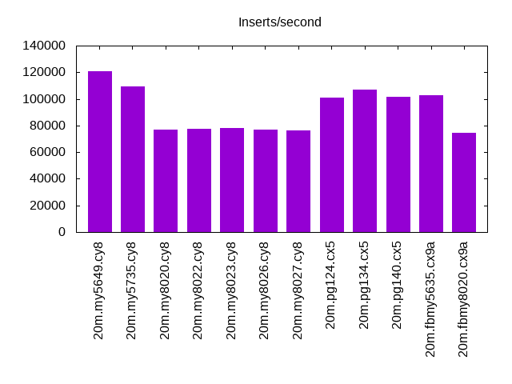
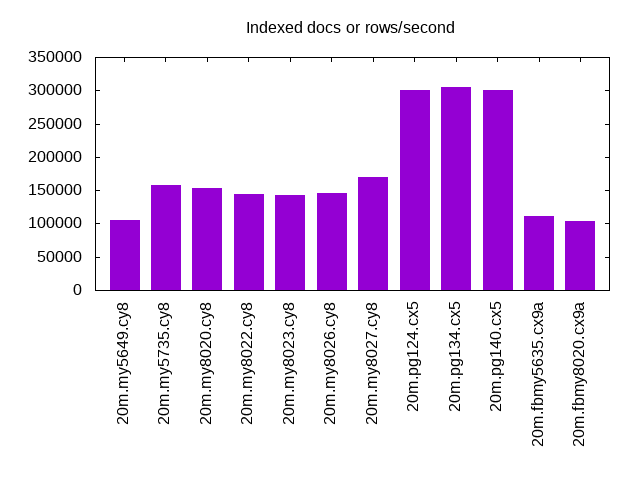
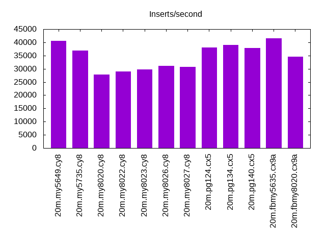
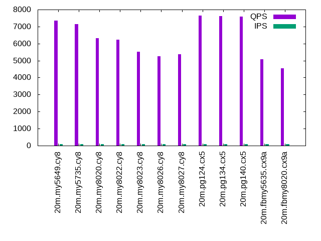
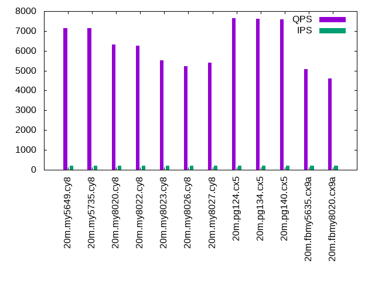
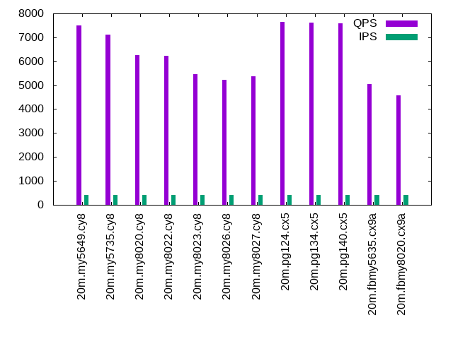
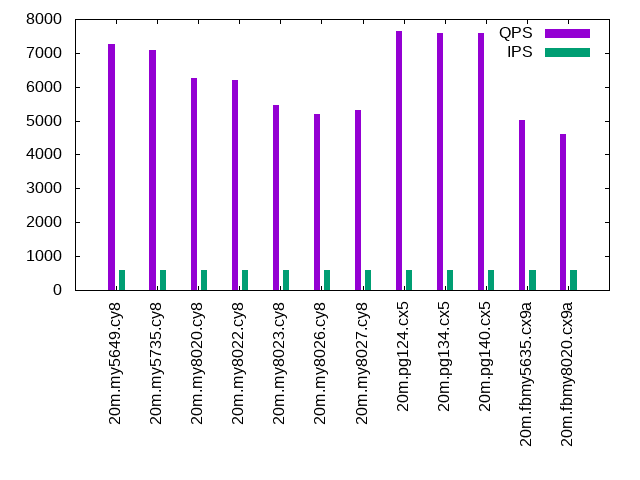
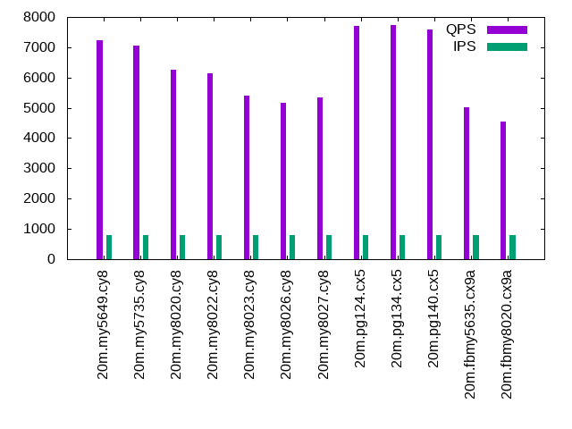
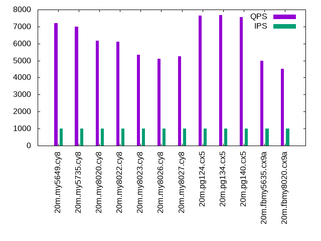

This is a report for the insert benchmark with 20M docs and 1 client(s). It is generated by scripts (bash, awk, sed) and Tufte might not be impressed. An overview of the insert benchmark is here and a short update is here. Below, by DBMS, I mean DBMS+version.config. An example is my8020.c10b40 where my means MySQL, 8020 is version 8.0.20 and c10b40 is the name for the configuration file.
The test server is an Intel NUC with 4 cores, 16G RAM and a Samsung 970 EVO. More details are here. Clients and the DBMS share one server.
The tested DBMS are:
The numbers are inserts/s for l.i0 and l.i1, indexed docs (or rows) /s for l.x and queries/s for q*.2. The values are the average rate over the entire test for inserts (IPS) and queries (QPS). The range of values for IPS and QPS is split into 3 parts: bottom 25%, middle 50%, top 25%. Values in the bottom 25% have a red background, values in the top 25% have a green background and values in the middle have no color. A gray background is used for values that can be ignored because the DBMS did not sustain the target insert rate. Red backgrounds are not used when the minimum value is within 80% of the max value.
| dbms | l.i0 | l.x | l.i1 | q100.2 | q200.2 | q400.2 | q600.2 | q800.2 | q1000.2 |
|---|---|---|---|---|---|---|---|---|---|
| 20m.my5649.cy8 | 120482 | 105789 | 40568 | 7350 | 7130 | 7487 | 7250 | 7241 | 7211 |
| 20m.my5735.cy8 | 109290 | 157031 | 36900 | 7134 | 7149 | 7108 | 7077 | 7059 | 7007 |
| 20m.my8020.cy8 | 76628 | 153435 | 27739 | 6331 | 6309 | 6254 | 6253 | 6246 | 6175 |
| 20m.my8022.cy8 | 77220 | 144604 | 28944 | 6239 | 6262 | 6227 | 6201 | 6143 | 6108 |
| 20m.my8023.cy8 | 78125 | 142553 | 29674 | 5509 | 5517 | 5455 | 5466 | 5415 | 5335 |
| 20m.my8026.cy8 | 76628 | 145652 | 31056 | 5262 | 5223 | 5238 | 5192 | 5155 | 5109 |
| 20m.my8027.cy8 | 76336 | 170339 | 30769 | 5377 | 5398 | 5361 | 5303 | 5331 | 5263 |
| 20m.pg124.cx5 | 101010 | 300000 | 37951 | 7648 | 7652 | 7636 | 7657 | 7698 | 7651 |
| 20m.pg134.cx5 | 106952 | 304545 | 39062 | 7628 | 7614 | 7607 | 7601 | 7728 | 7679 |
| 20m.pg140.cx5 | 101523 | 300000 | 37807 | 7576 | 7595 | 7573 | 7578 | 7590 | 7559 |
| 20m.fbmy5635.cx9a | 102564 | 111050 | 41494 | 5066 | 5080 | 5039 | 5023 | 5028 | 4982 |
| 20m.fbmy8020.cx9a | 74349 | 104145 | 34602 | 4552 | 4599 | 4578 | 4591 | 4537 | 4523 |
This lists the average rate of inserts/s for the tests that do inserts concurrent with queries. For such tests the query rate is listed in the table above. The read+write tests are setup so that the insert rate should match the target rate every second. Cells that are not at least 95% of the target have a red background to indicate a failure to satisfy the target.
| dbms | q100.2 | q200.2 | q400.2 | q600.2 | q800.2 | q1000.2 |
|---|---|---|---|---|---|---|
| my5649.cy8 | 100 | 200 | 399 | 599 | 799 | 998 |
| my5735.cy8 | 100 | 200 | 399 | 599 | 799 | 998 |
| my8020.cy8 | 100 | 200 | 399 | 599 | 799 | 998 |
| my8022.cy8 | 100 | 200 | 399 | 599 | 799 | 998 |
| my8023.cy8 | 100 | 200 | 399 | 599 | 799 | 998 |
| my8026.cy8 | 100 | 200 | 399 | 599 | 799 | 998 |
| my8027.cy8 | 100 | 200 | 399 | 599 | 799 | 998 |
| pg124.cx5 | 100 | 200 | 399 | 599 | 799 | 998 |
| pg134.cx5 | 100 | 200 | 399 | 599 | 799 | 998 |
| pg140.cx5 | 100 | 200 | 399 | 599 | 799 | 998 |
| fbmy5635.cx9a | 100 | 200 | 399 | 599 | 799 | 998 |
| fbmy8020.cx9a | 100 | 200 | 399 | 599 | 799 | 998 |
| target | 100 | 200 | 400 | 600 | 800 | 1000 |
l.i0: load without secondary indexes. Graphs for performance per 1-second interval are here.
Average throughput:
Insert response time histogram: each cell has the percentage of responses that take <= the time in the header and max is the max response time in seconds. For the max column values in the top 25% of the range have a red background and in the bottom 25% of the range have a green background. The red background is not used when the min value is within 80% of the max value.
| dbms | 256us | 1ms | 4ms | 16ms | 64ms | 256ms | 1s | 4s | 16s | gt | max |
|---|---|---|---|---|---|---|---|---|---|---|---|
| my5649.cy8 | 98.725 | 1.170 | 0.093 | 0.009 | 0.003 | 0.244 | |||||
| my5735.cy8 | 98.690 | 1.032 | 0.273 | 0.002 | 0.003 | 0.103 | |||||
| my8020.cy8 | 99.579 | 0.381 | 0.040 | 0.047 | |||||||
| my8022.cy8 | 99.700 | 0.232 | 0.068 | 0.001 | 0.098 | ||||||
| my8023.cy8 | 99.706 | 0.221 | 0.073 | 0.058 | |||||||
| my8026.cy8 | 99.682 | 0.281 | 0.036 | 0.054 | |||||||
| my8027.cy8 | 99.677 | 0.286 | 0.036 | 0.044 | |||||||
| pg124.cx5 | 86.342 | 13.658 | 0.001 | 0.006 | |||||||
| pg134.cx5 | 98.325 | 1.674 | 0.002 | 0.007 | |||||||
| pg140.cx5 | 89.036 | 10.963 | 0.001 | 0.004 | |||||||
| fbmy5635.cx9a | 83.660 | 16.289 | 0.047 | 0.003 | 0.104 | ||||||
| fbmy8020.cx9a | 99.828 | 0.148 | 0.024 | 0.001 | 0.093 |
Performance metrics for the DBMS listed above. Some are normalized by throughput, others are not. Legend for results is here.
ips qps rps rmbps wps wmbps rpq rkbpq wpi wkbpi csps cpups cspq cpupq dbgb1 dbgb2 rss maxop p50 p99 tag 120482 0 1057 4.1 59.6 27.4 0.009 0.035 0.000 0.233 13838 47.4 0.115 16 1.3 41.8 2.1 0.244 121965 86705 20m.my5649.cy8 109290 0 0 0.0 160.1 27.9 0.000 0.000 0.001 0.261 11219 45.6 0.103 17 1.3 42.0 2.4 0.103 111022 67028 20m.my5735.cy8 76628 0 0 0.0 111.1 20.1 0.000 0.000 0.001 0.269 18869 40.0 0.246 21 1.3 41.9 2.6 0.047 77114 68955 20m.my8020.cy8 77220 0 0 0.0 115.5 20.3 0.000 0.000 0.001 0.270 8075 40.6 0.105 21 1.3 41.9 2.6 0.098 77847 70620 20m.my8022.cy8 78125 0 0 0.0 122.6 20.6 0.000 0.000 0.002 0.270 8166 40.6 0.105 21 1.3 41.9 2.6 0.058 78412 73719 20m.my8023.cy8 76628 0 0 0.0 114.4 20.2 0.000 0.000 0.001 0.269 8004 40.3 0.104 21 1.3 41.9 2.6 0.054 77043 70125 20m.my8026.cy8 76336 0 0 0.0 109.2 20.1 0.000 0.000 0.001 0.270 7944 40.4 0.104 21 1.3 41.9 2.6 0.044 76516 71920 20m.my8027.cy8 101010 0 0 0.0 86.6 43.7 0.000 0.000 0.001 0.443 12430 42.4 0.123 17 1.9 5.2 0.0 0.006 102031 82410 20m.pg124.cx5 106952 0 0 0.0 69.7 44.8 0.000 0.000 0.001 0.429 12986 43.8 0.121 16 1.9 5.2 0.0 0.007 107683 85509 20m.pg134.cx5 101523 0 0 0.0 66.8 43.0 0.000 0.000 0.001 0.433 12359 42.9 0.122 17 1.9 5.2 0.0 0.004 101888 82294 20m.pg140.cx5 102564 0 0 0.0 30.7 14.9 0.000 0.000 0.000 0.149 10299 45.9 0.100 18 0.9 1.9 1.1 0.104 100626 86505 20m.fbmy5635.cx9a 74349 0 0 0.0 30.4 11.8 0.000 0.000 0.000 0.162 7789 42.2 0.105 23 0.8 2.0 1.4 0.093 73047 64928 20m.fbmy8020.cx9a
l.x: create secondary indexes.
Average throughput:
Performance metrics for the DBMS listed above. Some are normalized by throughput, others are not. Legend for results is here.
ips qps rps rmbps wps wmbps rpq rkbpq wpi wkbpi csps cpups cspq cpupq dbgb1 dbgb2 rss maxop p50 p99 tag 105789 0 123 44.4 871.6 98.0 0.001 0.430 0.008 0.949 2789 20.6 0.026 8 2.7 43.2 3.5 0.014 NA NA 20m.my5649.cy8 157031 0 132 47.3 1870.6 140.1 0.001 0.308 0.012 0.914 9802 23.6 0.062 6 3.0 43.6 3.9 0.009 NA NA 20m.my5735.cy8 153435 0 0 0.0 1537.3 124.0 0.000 0.000 0.010 0.828 9213 24.1 0.060 6 3.0 43.5 3.1 0.010 NA NA 20m.my8020.cy8 144604 0 0 0.0 1278.6 116.0 0.000 0.000 0.009 0.821 7316 23.6 0.051 7 3.0 43.5 3.1 0.015 NA NA 20m.my8022.cy8 142553 0 0 0.0 1442.1 115.2 0.000 0.000 0.010 0.828 7447 23.2 0.052 7 3.0 43.5 3.1 0.020 NA NA 20m.my8023.cy8 145652 0 0 0.0 1357.3 117.5 0.000 0.000 0.009 0.826 7415 23.7 0.051 7 3.0 43.5 3.2 0.010 NA NA 20m.my8026.cy8 170339 0 1016 69.1 2715.6 169.2 0.006 0.415 0.016 1.017 18447 68.8 0.108 16 3.0 43.5 4.0 0.024 NA NA 20m.my8027.cy8 300000 0 0 0.0 61.2 60.7 0.000 0.000 0.000 0.207 1946 24.2 0.006 3 3.7 8.6 0.0 0.002 NA NA 20m.pg124.cx5 304545 0 0 0.0 70.2 72.8 0.000 0.000 0.000 0.245 1981 24.0 0.007 3 3.7 8.6 0.0 0.002 NA NA 20m.pg134.cx5 300000 0 0 0.0 56.9 60.2 0.000 0.000 0.000 0.205 1895 24.4 0.006 3 3.7 8.6 0.0 0.002 NA NA 20m.pg140.cx5 111050 0 0 0.0 31.5 18.3 0.000 0.000 0.000 0.169 705 24.7 0.006 9 1.6 2.6 2.2 0.012 NA NA 20m.fbmy5635.cx9a 104145 0 0 0.0 26.3 16.3 0.000 0.000 0.000 0.160 903 25.6 0.009 10 1.5 2.7 2.7 0.012 NA NA 20m.fbmy8020.cx9a
l.i1: continue load after secondary indexes created. Graphs for performance per 1-second interval are here.
Average throughput:
Insert response time histogram: each cell has the percentage of responses that take <= the time in the header and max is the max response time in seconds. For the max column values in the top 25% of the range have a red background and in the bottom 25% of the range have a green background. The red background is not used when the min value is within 80% of the max value.
| dbms | 256us | 1ms | 4ms | 16ms | 64ms | 256ms | 1s | 4s | 16s | gt | max |
|---|---|---|---|---|---|---|---|---|---|---|---|
| my5649.cy8 | 4.331 | 94.816 | 0.741 | 0.111 | 0.002 | 0.165 | |||||
| my5735.cy8 | 99.180 | 0.773 | 0.048 | 0.051 | |||||||
| my8020.cy8 | 99.155 | 0.695 | 0.108 | 0.042 | 0.117 | ||||||
| my8022.cy8 | 99.354 | 0.439 | 0.172 | 0.034 | 0.116 | ||||||
| my8023.cy8 | 99.342 | 0.456 | 0.198 | 0.005 | 0.080 | ||||||
| my8026.cy8 | 99.361 | 0.508 | 0.131 | 0.001 | 0.071 | ||||||
| my8027.cy8 | 99.358 | 0.514 | 0.128 | nonzero | 0.075 | ||||||
| pg124.cx5 | 99.855 | 0.120 | 0.025 | 0.002 | 0.074 | ||||||
| pg134.cx5 | 99.846 | 0.127 | 0.024 | 0.003 | nonzero | 0.324 | |||||
| pg140.cx5 | 99.862 | 0.109 | 0.026 | 0.001 | 0.001 | 0.751 | |||||
| fbmy5635.cx9a | 3.085 | 96.830 | 0.082 | 0.002 | 0.001 | 0.078 | |||||
| fbmy8020.cx9a | 99.854 | 0.130 | 0.016 | 0.052 |
Performance metrics for the DBMS listed above. Some are normalized by throughput, others are not. Legend for results is here.
ips qps rps rmbps wps wmbps rpq rkbpq wpi wkbpi csps cpups cspq cpupq dbgb1 dbgb2 rss maxop p50 p99 tag 40568 0 712 2.8 88.5 25.7 0.018 0.070 0.002 0.649 9387 33.1 0.231 33 7.9 48.4 7.9 0.165 42154 7841 20m.my5649.cy8 36900 0 0 0.0 850.1 45.6 0.000 0.000 0.023 1.267 9885 34.4 0.268 37 7.9 48.5 8.3 0.051 38208 4248 20m.my5735.cy8 27739 0 128 2.0 146.8 19.2 0.005 0.074 0.005 0.710 14208 33.3 0.512 48 7.9 48.4 8.5 0.117 29423 599 20m.my8020.cy8 28944 0 134 2.1 147.0 20.0 0.005 0.074 0.005 0.707 6751 32.2 0.233 45 7.9 48.4 8.5 0.116 30766 650 20m.my8022.cy8 29674 0 138 2.1 156.8 20.7 0.005 0.074 0.005 0.713 6774 32.5 0.228 44 7.9 48.4 8.5 0.080 31267 1049 20m.my8023.cy8 31056 0 144 2.3 153.4 21.5 0.005 0.074 0.005 0.708 7045 33.2 0.227 43 7.9 48.4 8.5 0.071 32528 1099 20m.my8026.cy8 30769 0 143 2.2 150.7 21.3 0.005 0.074 0.005 0.709 6995 33.3 0.227 43 7.9 48.4 8.5 0.075 32264 1199 20m.my8027.cy8 37951 0 0 0.0 222.5 64.1 0.000 0.000 0.006 1.729 9631 35.4 0.254 37 8.2 19.3 0.0 0.074 39407 11638 20m.pg124.cx5 39062 0 0 0.0 202.7 68.1 0.000 0.000 0.005 1.785 9993 36.0 0.256 37 8.2 19.9 0.0 0.324 40456 10388 20m.pg134.cx5 37807 0 0 0.0 153.4 63.3 0.000 0.000 0.004 1.715 9553 36.0 0.253 38 8.2 20.8 0.0 0.751 39507 9444 20m.pg140.cx5 41494 0 4 0.5 59.7 40.5 0.000 0.013 0.001 0.998 9033 48.5 0.218 47 4.0 7.6 3.0 0.078 41205 34812 20m.fbmy5635.cx9a 34602 0 4 0.4 56.0 34.6 0.000 0.013 0.002 1.023 7892 46.0 0.228 53 4.1 7.8 3.4 0.052 34412 30567 20m.fbmy8020.cx9a
q100.2: range queries with 100 insert/s per client, 2nd loop. Graphs for performance per 1-second interval are here.
Average throughput:
Query response time histogram: each cell has the percentage of responses that take <= the time in the header and max is the max response time in seconds. For max values in the top 25% of the range have a red background and in the bottom 25% of the range have a green background. The red background is not used when the min value is within 80% of the max value.
| dbms | 256us | 1ms | 4ms | 16ms | 64ms | 256ms | 1s | 4s | 16s | gt | max |
|---|---|---|---|---|---|---|---|---|---|---|---|
| my5649.cy8 | 94.142 | 5.856 | 0.001 | 0.002 | nonzero | 0.017 | |||||
| my5735.cy8 | 99.868 | 0.131 | nonzero | nonzero | nonzero | 0.020 | |||||
| my8020.cy8 | 99.274 | 0.725 | nonzero | nonzero | nonzero | 0.017 | |||||
| my8022.cy8 | 99.473 | 0.526 | nonzero | nonzero | nonzero | 0.023 | |||||
| my8023.cy8 | 98.460 | 1.539 | nonzero | nonzero | nonzero | 0.024 | |||||
| my8026.cy8 | 97.781 | 2.218 | nonzero | nonzero | nonzero | 0.019 | |||||
| my8027.cy8 | 98.025 | 1.975 | nonzero | nonzero | nonzero | 0.020 | |||||
| pg124.cx5 | 99.968 | 0.031 | 0.001 | 0.003 | |||||||
| pg134.cx5 | 99.962 | 0.037 | 0.001 | 0.003 | |||||||
| pg140.cx5 | 99.953 | 0.046 | 0.001 | nonzero | 0.005 | ||||||
| fbmy5635.cx9a | 97.751 | 2.249 | nonzero | 0.002 | |||||||
| fbmy8020.cx9a | 97.851 | 2.149 | nonzero | nonzero | 0.006 |
Insert response time histogram: each cell has the percentage of responses that take <= the time in the header and max is the max response time in seconds. For max values in the top 25% of the range have a red background and in the bottom 25% of the range have a green background. The red background is not used when the min value is within 80% of the max value.
| dbms | 256us | 1ms | 4ms | 16ms | 64ms | 256ms | 1s | 4s | 16s | gt | max |
|---|---|---|---|---|---|---|---|---|---|---|---|
| my5649.cy8 | 52.861 | 42.472 | 4.667 | 0.035 | |||||||
| my5735.cy8 | 99.222 | 0.472 | 0.306 | 0.024 | |||||||
| my8020.cy8 | 98.667 | 1.167 | 0.167 | 0.024 | |||||||
| my8022.cy8 | 99.250 | 0.472 | 0.278 | 0.028 | |||||||
| my8023.cy8 | 99.194 | 0.667 | 0.139 | 0.026 | |||||||
| my8026.cy8 | 99.139 | 0.722 | 0.139 | 0.022 | |||||||
| my8027.cy8 | 99.139 | 0.806 | 0.056 | 0.025 | |||||||
| pg124.cx5 | 99.944 | 0.056 | 0.006 | ||||||||
| pg134.cx5 | 99.944 | 0.056 | 0.006 | ||||||||
| pg140.cx5 | 99.972 | 0.028 | 0.006 | ||||||||
| fbmy5635.cx9a | 99.944 | 0.056 | 0.004 | ||||||||
| fbmy8020.cx9a | 99.889 | 0.111 | 0.007 |
Performance metrics for the DBMS listed above. Some are normalized by throughput, others are not. Legend for results is here.
ips qps rps rmbps wps wmbps rpq rkbpq wpi wkbpi csps cpups cspq cpupq dbgb1 dbgb2 rss maxop p50 p99 tag 100 7350 2 0.0 6.0 0.2 0.000 0.001 0.060 2.149 28187 25.9 3.835 141 8.1 48.6 8.1 0.017 8406 2653 20m.my5649.cy8 100 7134 0 0.0 2.3 0.1 0.000 0.000 0.023 1.052 27363 26.8 3.836 150 8.1 48.7 8.5 0.020 7144 7032 20m.my5735.cy8 100 6331 0 0.0 39.8 1.0 0.000 0.000 0.399 9.794 25003 29.1 3.949 184 8.1 48.6 8.7 0.017 6332 6141 20m.my8020.cy8 100 6239 0 0.0 42.1 1.0 0.000 0.000 0.422 10.630 24054 26.7 3.855 171 8.1 48.6 8.7 0.023 6249 6121 20m.my8022.cy8 100 5509 0 0.0 22.6 0.4 0.000 0.000 0.226 4.432 21237 26.3 3.855 191 8.1 48.6 8.6 0.024 5514 5402 20m.my8023.cy8 100 5262 0 0.0 29.1 0.6 0.000 0.000 0.292 6.205 20312 26.3 3.860 200 8.1 48.6 8.6 0.019 5274 5162 20m.my8026.cy8 100 5377 0 0.0 31.6 0.7 0.000 0.000 0.317 6.838 20758 26.4 3.860 196 8.1 48.6 8.6 0.020 5386 5258 20m.my8027.cy8 100 7648 0 0.0 210.5 3.9 0.000 0.000 2.109 39.563 29432 27.7 3.848 145 8.2 14.1 0.0 0.003 7656 7517 20m.pg124.cx5 100 7628 0 0.0 209.9 3.9 0.000 0.000 2.103 39.543 29354 27.6 3.848 145 8.2 13.7 0.0 0.003 7639 7496 20m.pg134.cx5 100 7576 0 0.0 203.4 3.8 0.000 0.000 2.038 38.696 29088 26.2 3.840 138 8.2 16.0 0.0 0.005 7579 7448 20m.pg140.cx5 100 5066 0 0.0 3.1 0.0 0.000 0.000 0.031 0.248 19440 26.1 3.838 206 3.2 6.9 4.8 0.002 5066 4986 20m.fbmy5635.cx9a 100 4552 0 0.0 3.1 0.0 0.000 0.000 0.031 0.250 17627 27.1 3.872 238 3.2 7.0 5.0 0.006 4555 4491 20m.fbmy8020.cx9a
q200.2: range queries with 200 insert/s per client, 2nd loop. Graphs for performance per 1-second interval are here.
Average throughput:
Query response time histogram: each cell has the percentage of responses that take <= the time in the header and max is the max response time in seconds. For max values in the top 25% of the range have a red background and in the bottom 25% of the range have a green background. The red background is not used when the min value is within 80% of the max value.
| dbms | 256us | 1ms | 4ms | 16ms | 64ms | 256ms | 1s | 4s | 16s | gt | max |
|---|---|---|---|---|---|---|---|---|---|---|---|
| my5649.cy8 | 92.528 | 7.468 | 0.002 | 0.002 | nonzero | 0.017 | |||||
| my5735.cy8 | 99.865 | 0.135 | nonzero | nonzero | nonzero | 0.020 | |||||
| my8020.cy8 | 99.294 | 0.706 | nonzero | nonzero | nonzero | 0.020 | |||||
| my8022.cy8 | 99.501 | 0.499 | nonzero | nonzero | nonzero | 0.026 | |||||
| my8023.cy8 | 98.473 | 1.526 | nonzero | nonzero | nonzero | 0.023 | |||||
| my8026.cy8 | 97.499 | 2.500 | nonzero | nonzero | nonzero | 0.016 | |||||
| my8027.cy8 | 98.086 | 1.914 | nonzero | nonzero | nonzero | 0.019 | |||||
| pg124.cx5 | 99.964 | 0.034 | 0.002 | nonzero | 0.004 | ||||||
| pg134.cx5 | 99.956 | 0.042 | 0.002 | nonzero | 0.005 | ||||||
| pg140.cx5 | 99.946 | 0.052 | 0.002 | 0.003 | |||||||
| fbmy5635.cx9a | 97.904 | 2.096 | nonzero | nonzero | 0.006 | ||||||
| fbmy8020.cx9a | 97.942 | 2.058 | nonzero | 0.002 |
Insert response time histogram: each cell has the percentage of responses that take <= the time in the header and max is the max response time in seconds. For max values in the top 25% of the range have a red background and in the bottom 25% of the range have a green background. The red background is not used when the min value is within 80% of the max value.
| dbms | 256us | 1ms | 4ms | 16ms | 64ms | 256ms | 1s | 4s | 16s | gt | max |
|---|---|---|---|---|---|---|---|---|---|---|---|
| my5649.cy8 | 75.792 | 21.681 | 2.528 | 0.019 | |||||||
| my5735.cy8 | 99.403 | 0.347 | 0.250 | 0.025 | |||||||
| my8020.cy8 | 99.069 | 0.847 | 0.083 | 0.025 | |||||||
| my8022.cy8 | 99.431 | 0.347 | 0.222 | 0.028 | |||||||
| my8023.cy8 | 99.375 | 0.500 | 0.125 | 0.027 | |||||||
| my8026.cy8 | 99.417 | 0.472 | 0.111 | 0.022 | |||||||
| my8027.cy8 | 99.347 | 0.597 | 0.056 | 0.024 | |||||||
| pg124.cx5 | 99.972 | 0.028 | 0.006 | ||||||||
| pg134.cx5 | 99.972 | 0.028 | 0.006 | ||||||||
| pg140.cx5 | 99.972 | 0.028 | 0.006 | ||||||||
| fbmy5635.cx9a | 100.000 | 0.004 | |||||||||
| fbmy8020.cx9a | 99.903 | 0.083 | 0.014 | 0.018 |
Performance metrics for the DBMS listed above. Some are normalized by throughput, others are not. Legend for results is here.
ips qps rps rmbps wps wmbps rpq rkbpq wpi wkbpi csps cpups cspq cpupq dbgb1 dbgb2 rss maxop p50 p99 tag 200 7130 4 0.0 6.1 0.3 0.000 0.002 0.031 1.446 27357 25.9 3.837 145 8.4 48.9 8.4 0.017 8439 2957 20m.my5649.cy8 200 7149 0 0.0 6.7 0.3 0.000 0.000 0.034 1.386 27439 27.0 3.838 151 8.4 49.0 8.8 0.020 7160 7000 20m.my5735.cy8 200 6309 0 0.0 5.0 0.2 0.000 0.000 0.025 1.057 24813 29.0 3.933 184 8.4 48.9 9.0 0.020 6313 6153 20m.my8020.cy8 200 6262 0 0.0 4.9 0.2 0.000 0.000 0.025 1.059 24077 26.9 3.845 172 8.4 48.9 9.0 0.026 6265 6041 20m.my8022.cy8 200 5517 0 0.0 19.9 0.4 0.000 0.000 0.100 2.175 21267 26.4 3.855 191 8.4 49.0 8.9 0.023 5530 5405 20m.my8023.cy8 200 5223 0 0.0 19.8 0.4 0.000 0.000 0.099 2.160 20149 26.5 3.858 203 8.4 48.9 8.9 0.016 5228 5114 20m.my8026.cy8 200 5398 0 0.0 19.8 0.4 0.000 0.000 0.099 2.174 20818 26.5 3.856 196 8.4 48.9 8.9 0.019 5402 5290 20m.my8027.cy8 200 7652 0 0.0 299.6 6.8 0.000 0.000 1.501 35.063 29466 27.7 3.851 145 8.4 10.9 0.0 0.004 7656 7512 20m.pg124.cx5 200 7614 0 0.0 300.2 6.8 0.000 0.000 1.504 35.061 29319 27.7 3.851 146 8.4 10.8 0.0 0.005 7624 7496 20m.pg134.cx5 200 7595 0 0.0 290.2 6.6 0.000 0.000 1.454 33.918 29186 26.4 3.843 139 8.4 11.5 0.0 0.003 7598 7466 20m.pg140.cx5 200 5080 0 0.0 3.1 0.0 0.000 0.000 0.016 0.215 19505 26.2 3.840 206 3.3 7.1 5.3 0.006 5082 5002 20m.fbmy5635.cx9a 200 4599 0 0.0 3.1 0.0 0.000 0.000 0.016 0.217 17816 27.1 3.874 236 3.3 7.2 5.5 0.002 4603 4509 20m.fbmy8020.cx9a
q400.2: range queries with 400 insert/s per client, 2nd loop. Graphs for performance per 1-second interval are here.
Average throughput:
Query response time histogram: each cell has the percentage of responses that take <= the time in the header and max is the max response time in seconds. For max values in the top 25% of the range have a red background and in the bottom 25% of the range have a green background. The red background is not used when the min value is within 80% of the max value.
| dbms | 256us | 1ms | 4ms | 16ms | 64ms | 256ms | 1s | 4s | 16s | gt | max |
|---|---|---|---|---|---|---|---|---|---|---|---|
| my5649.cy8 | 95.030 | 4.966 | 0.002 | 0.002 | nonzero | 0.017 | |||||
| my5735.cy8 | 99.791 | 0.207 | 0.001 | nonzero | nonzero | 0.020 | |||||
| my8020.cy8 | 99.197 | 0.802 | 0.001 | nonzero | 0.011 | ||||||
| my8022.cy8 | 99.369 | 0.630 | 0.001 | nonzero | nonzero | 0.024 | |||||
| my8023.cy8 | 98.009 | 1.990 | 0.001 | nonzero | nonzero | 0.025 | |||||
| my8026.cy8 | 97.586 | 2.412 | 0.001 | nonzero | 0.012 | ||||||
| my8027.cy8 | 97.827 | 2.171 | 0.002 | nonzero | nonzero | 0.020 | |||||
| pg124.cx5 | 99.947 | 0.048 | 0.005 | nonzero | 0.004 | ||||||
| pg134.cx5 | 99.938 | 0.057 | 0.004 | 0.004 | |||||||
| pg140.cx5 | 99.918 | 0.077 | 0.005 | nonzero | 0.004 | ||||||
| fbmy5635.cx9a | 97.413 | 2.586 | 0.001 | 0.002 | |||||||
| fbmy8020.cx9a | 97.576 | 2.422 | 0.001 | 0.004 |
Insert response time histogram: each cell has the percentage of responses that take <= the time in the header and max is the max response time in seconds. For max values in the top 25% of the range have a red background and in the bottom 25% of the range have a green background. The red background is not used when the min value is within 80% of the max value.
| dbms | 256us | 1ms | 4ms | 16ms | 64ms | 256ms | 1s | 4s | 16s | gt | max |
|---|---|---|---|---|---|---|---|---|---|---|---|
| my5649.cy8 | 0.167 | 87.799 | 11.424 | 0.611 | 0.020 | ||||||
| my5735.cy8 | 99.660 | 0.250 | 0.090 | 0.023 | |||||||
| my8020.cy8 | 99.271 | 0.681 | 0.049 | 0.023 | |||||||
| my8022.cy8 | 99.653 | 0.229 | 0.118 | 0.027 | |||||||
| my8023.cy8 | 99.632 | 0.271 | 0.097 | 0.028 | |||||||
| my8026.cy8 | 99.632 | 0.340 | 0.028 | 0.024 | |||||||
| my8027.cy8 | 99.653 | 0.271 | 0.076 | 0.022 | |||||||
| pg124.cx5 | 99.979 | 0.021 | 0.006 | ||||||||
| pg134.cx5 | 99.993 | 0.007 | 0.006 | ||||||||
| pg140.cx5 | 99.931 | 0.069 | 0.006 | ||||||||
| fbmy5635.cx9a | 99.972 | 0.028 | 0.004 | ||||||||
| fbmy8020.cx9a | 99.875 | 0.111 | 0.014 | 0.019 |
Performance metrics for the DBMS listed above. Some are normalized by throughput, others are not. Legend for results is here.
ips qps rps rmbps wps wmbps rpq rkbpq wpi wkbpi csps cpups cspq cpupq dbgb1 dbgb2 rss maxop p50 p99 tag 399 7487 7 0.0 5.8 0.3 0.001 0.004 0.014 0.838 28764 26.2 3.842 140 8.8 49.3 8.7 0.017 8391 2959 20m.my5649.cy8 399 7108 0 0.0 11.7 0.5 0.000 0.000 0.029 1.155 27335 27.2 3.845 153 8.8 49.4 9.1 0.020 7112 7000 20m.my5735.cy8 399 6254 0 0.0 5.9 0.3 0.000 0.000 0.015 0.739 24716 29.1 3.952 186 8.8 49.3 9.3 0.011 6265 6089 20m.my8020.cy8 399 6227 0 0.0 6.2 0.3 0.000 0.000 0.015 0.762 23973 27.0 3.850 173 8.8 49.3 9.3 0.024 6233 6105 20m.my8022.cy8 399 5455 0 0.0 20.0 0.5 0.000 0.000 0.050 1.244 21063 26.6 3.861 195 8.8 49.3 9.3 0.025 5466 5290 20m.my8023.cy8 399 5238 0 0.0 19.8 0.5 0.000 0.000 0.050 1.250 20238 26.6 3.864 203 8.8 49.3 9.3 0.012 5242 5130 20m.my8026.cy8 399 5361 0 0.0 19.9 0.5 0.000 0.000 0.050 1.251 20712 26.8 3.863 200 8.8 49.3 9.3 0.020 5370 5242 20m.my8027.cy8 399 7636 0 0.0 361.2 11.3 0.000 0.000 0.905 28.864 29452 28.0 3.857 147 8.8 11.4 0.0 0.004 7640 7512 20m.pg124.cx5 399 7607 0 0.0 362.7 11.3 0.000 0.000 0.908 28.905 29341 28.1 3.857 148 8.8 11.5 0.0 0.004 7610 7453 20m.pg134.cx5 399 7573 0 0.0 359.4 10.7 0.000 0.000 0.900 27.509 29158 26.6 3.850 140 8.8 12.0 0.0 0.004 7576 7435 20m.pg140.cx5 399 5039 0 0.0 3.1 0.1 0.000 0.000 0.008 0.198 19384 26.4 3.847 210 3.4 7.3 6.1 0.002 5037 4954 20m.fbmy5635.cx9a 399 4578 0 0.0 3.2 0.1 0.000 0.000 0.008 0.201 17764 27.2 3.880 238 3.3 7.4 6.4 0.004 4575 4507 20m.fbmy8020.cx9a
q600.2: range queries with 600 insert/s per client, 2nd loop. Graphs for performance per 1-second interval are here.
Average throughput:
Query response time histogram: each cell has the percentage of responses that take <= the time in the header and max is the max response time in seconds. For max values in the top 25% of the range have a red background and in the bottom 25% of the range have a green background. The red background is not used when the min value is within 80% of the max value.
| dbms | 256us | 1ms | 4ms | 16ms | 64ms | 256ms | 1s | 4s | 16s | gt | max |
|---|---|---|---|---|---|---|---|---|---|---|---|
| my5649.cy8 | 93.760 | 6.234 | 0.003 | 0.002 | nonzero | 0.016 | |||||
| my5735.cy8 | 99.744 | 0.253 | 0.002 | nonzero | nonzero | 0.019 | |||||
| my8020.cy8 | 99.217 | 0.782 | 0.001 | nonzero | 0.016 | ||||||
| my8022.cy8 | 99.227 | 0.770 | 0.003 | nonzero | 0.013 | ||||||
| my8023.cy8 | 98.070 | 1.927 | 0.003 | nonzero | 0.012 | ||||||
| my8026.cy8 | 97.109 | 2.888 | 0.003 | nonzero | nonzero | 0.017 | |||||
| my8027.cy8 | 97.445 | 2.552 | 0.003 | nonzero | 0.013 | ||||||
| pg124.cx5 | 99.931 | 0.061 | 0.008 | nonzero | 0.004 | ||||||
| pg134.cx5 | 99.925 | 0.067 | 0.008 | 0.004 | |||||||
| pg140.cx5 | 99.902 | 0.090 | 0.008 | nonzero | 0.005 | ||||||
| fbmy5635.cx9a | 97.207 | 2.792 | 0.002 | nonzero | 0.006 | ||||||
| fbmy8020.cx9a | 97.298 | 2.698 | 0.004 | nonzero | 0.011 |
Insert response time histogram: each cell has the percentage of responses that take <= the time in the header and max is the max response time in seconds. For max values in the top 25% of the range have a red background and in the bottom 25% of the range have a green background. The red background is not used when the min value is within 80% of the max value.
| dbms | 256us | 1ms | 4ms | 16ms | 64ms | 256ms | 1s | 4s | 16s | gt | max |
|---|---|---|---|---|---|---|---|---|---|---|---|
| my5649.cy8 | 0.190 | 91.755 | 7.694 | 0.361 | 0.045 | ||||||
| my5735.cy8 | 99.843 | 0.130 | 0.028 | 0.024 | |||||||
| my8020.cy8 | 98.806 | 1.162 | 0.032 | 0.025 | |||||||
| my8022.cy8 | 99.801 | 0.167 | 0.032 | 0.024 | |||||||
| my8023.cy8 | 99.722 | 0.269 | 0.009 | 0.026 | |||||||
| my8026.cy8 | 99.778 | 0.208 | 0.014 | 0.023 | |||||||
| my8027.cy8 | 99.787 | 0.199 | 0.014 | 0.023 | |||||||
| pg124.cx5 | 99.963 | 0.037 | 0.006 | ||||||||
| pg134.cx5 | 99.986 | 0.014 | 0.006 | ||||||||
| pg140.cx5 | 99.986 | 0.014 | 0.006 | ||||||||
| fbmy5635.cx9a | 0.009 | 99.940 | 0.051 | 0.010 | |||||||
| fbmy8020.cx9a | 99.880 | 0.106 | 0.014 | 0.018 |
Performance metrics for the DBMS listed above. Some are normalized by throughput, others are not. Legend for results is here.
ips qps rps rmbps wps wmbps rpq rkbpq wpi wkbpi csps cpups cspq cpupq dbgb1 dbgb2 rss maxop p50 p99 tag 599 7250 10 0.0 6.3 0.4 0.001 0.006 0.011 0.621 27897 26.4 3.848 146 9.0 49.5 8.9 0.016 8343 2924 20m.my5649.cy8 599 7077 0 0.0 16.2 0.6 0.000 0.000 0.027 0.997 27257 27.4 3.852 155 9.0 49.7 9.4 0.019 7080 6984 20m.my5735.cy8 599 6253 0 0.0 9.4 0.4 0.000 0.000 0.016 0.663 24818 29.2 3.969 187 9.0 49.6 9.5 0.016 6265 6105 20m.my8020.cy8 599 6201 0 0.0 8.3 0.4 0.000 0.000 0.014 0.627 23913 27.2 3.857 175 9.0 49.6 9.5 0.013 6201 6089 20m.my8022.cy8 599 5466 0 0.0 19.9 0.5 0.000 0.000 0.033 0.866 21143 26.8 3.868 196 9.0 49.6 9.5 0.012 5466 5370 20m.my8023.cy8 599 5192 0 0.0 19.8 0.5 0.000 0.000 0.033 0.866 20097 26.8 3.870 206 9.0 49.6 9.5 0.017 5194 5098 20m.my8026.cy8 599 5303 0 0.0 19.7 0.5 0.000 0.000 0.033 0.866 20521 26.9 3.870 203 9.0 49.6 9.5 0.013 5306 5194 20m.my8027.cy8 599 7657 0 0.0 437.0 14.6 0.000 0.000 0.730 24.983 29589 28.4 3.864 148 10.0 13.2 0.0 0.004 7656 7512 20m.pg124.cx5 599 7601 0 0.0 437.4 14.6 0.000 0.000 0.730 24.975 29369 28.2 3.864 148 10.0 13.3 0.0 0.004 7608 7448 20m.pg134.cx5 599 7578 0 0.0 435.5 13.8 0.000 0.000 0.727 23.606 29238 26.8 3.858 141 10.0 13.9 0.0 0.005 7592 7432 20m.pg140.cx5 599 5023 0 0.0 4.3 0.9 0.000 0.000 0.007 1.535 19385 26.9 3.859 214 3.6 7.8 7.2 0.006 5034 4906 20m.fbmy5635.cx9a 599 4591 0 0.0 4.5 0.9 0.000 0.000 0.007 1.553 17885 27.7 3.896 241 3.5 7.9 7.5 0.011 4587 4459 20m.fbmy8020.cx9a
q800.2: range queries with 800 insert/s per client, 2nd loop. Graphs for performance per 1-second interval are here.
Average throughput:
Query response time histogram: each cell has the percentage of responses that take <= the time in the header and max is the max response time in seconds. For max values in the top 25% of the range have a red background and in the bottom 25% of the range have a green background. The red background is not used when the min value is within 80% of the max value.
| dbms | 256us | 1ms | 4ms | 16ms | 64ms | 256ms | 1s | 4s | 16s | gt | max |
|---|---|---|---|---|---|---|---|---|---|---|---|
| my5649.cy8 | 93.824 | 6.169 | 0.004 | 0.002 | 0.015 | ||||||
| my5735.cy8 | 99.659 | 0.337 | 0.003 | nonzero | nonzero | 0.020 | |||||
| my8020.cy8 | 99.087 | 0.911 | 0.002 | nonzero | nonzero | 0.021 | |||||
| my8022.cy8 | 99.008 | 0.988 | 0.004 | nonzero | nonzero | 0.024 | |||||
| my8023.cy8 | 97.736 | 2.260 | 0.005 | nonzero | 0.014 | ||||||
| my8026.cy8 | 96.808 | 3.188 | 0.004 | nonzero | nonzero | 0.019 | |||||
| my8027.cy8 | 97.461 | 2.534 | 0.004 | nonzero | nonzero | 0.019 | |||||
| pg124.cx5 | 99.914 | 0.076 | 0.011 | nonzero | 0.004 | ||||||
| pg134.cx5 | 99.912 | 0.077 | 0.010 | nonzero | 0.004 | ||||||
| pg140.cx5 | 99.873 | 0.115 | 0.011 | nonzero | 0.004 | ||||||
| fbmy5635.cx9a | 97.223 | 2.775 | 0.002 | nonzero | 0.010 | ||||||
| fbmy8020.cx9a | 96.740 | 3.253 | 0.006 | nonzero | 0.006 |
Insert response time histogram: each cell has the percentage of responses that take <= the time in the header and max is the max response time in seconds. For max values in the top 25% of the range have a red background and in the bottom 25% of the range have a green background. The red background is not used when the min value is within 80% of the max value.
| dbms | 256us | 1ms | 4ms | 16ms | 64ms | 256ms | 1s | 4s | 16s | gt | max |
|---|---|---|---|---|---|---|---|---|---|---|---|
| my5649.cy8 | 0.177 | 93.618 | 5.931 | 0.274 | 0.018 | ||||||
| my5735.cy8 | 99.764 | 0.198 | 0.038 | 0.025 | |||||||
| my8020.cy8 | 98.729 | 1.153 | 0.118 | 0.024 | |||||||
| my8022.cy8 | 99.715 | 0.201 | 0.083 | 0.029 | |||||||
| my8023.cy8 | 99.740 | 0.219 | 0.042 | 0.026 | |||||||
| my8026.cy8 | 99.674 | 0.309 | 0.017 | 0.022 | |||||||
| my8027.cy8 | 99.694 | 0.274 | 0.031 | 0.024 | |||||||
| pg124.cx5 | 97.580 | 2.410 | 0.010 | 0.019 | |||||||
| pg134.cx5 | 97.632 | 2.347 | 0.021 | 0.021 | |||||||
| pg140.cx5 | 97.844 | 2.146 | 0.010 | 0.023 | |||||||
| fbmy5635.cx9a | 0.052 | 99.927 | 0.021 | 0.010 | |||||||
| fbmy8020.cx9a | 99.882 | 0.094 | 0.024 | 0.019 |
Performance metrics for the DBMS listed above. Some are normalized by throughput, others are not. Legend for results is here.
ips qps rps rmbps wps wmbps rpq rkbpq wpi wkbpi csps cpups cspq cpupq dbgb1 dbgb2 rss maxop p50 p99 tag 799 7241 14 0.1 6.3 0.5 0.002 0.008 0.008 0.629 27907 26.6 3.854 147 9.4 49.9 9.3 0.015 8327 3005 20m.my5649.cy8 799 7059 0 0.0 28.4 1.0 0.000 0.000 0.036 1.267 27269 27.6 3.863 156 9.4 50.1 9.7 0.020 7064 6956 20m.my5735.cy8 799 6246 0 0.0 19.7 0.7 0.000 0.000 0.025 0.915 24963 29.5 3.996 189 9.4 49.9 9.9 0.021 6252 6073 20m.my8020.cy8 799 6143 0 0.0 18.2 0.7 0.000 0.000 0.023 0.946 23744 27.4 3.865 178 9.4 49.9 9.9 0.024 6153 6009 20m.my8022.cy8 799 5415 0 0.0 20.2 0.6 0.000 0.000 0.025 0.827 20985 26.9 3.875 199 9.4 50.0 9.8 0.014 5418 5306 20m.my8023.cy8 799 5155 0 0.0 20.0 0.6 0.000 0.000 0.025 0.821 19995 26.9 3.879 209 9.4 50.0 9.9 0.019 5162 5050 20m.my8026.cy8 799 5331 0 0.0 20.2 0.6 0.000 0.000 0.025 0.825 20662 27.0 3.876 203 9.4 50.0 9.9 0.019 5338 5210 20m.my8027.cy8 799 7698 4 0.0 505.1 16.7 0.001 0.005 0.632 21.422 29804 28.5 3.872 148 11.3 14.8 0.0 0.004 7704 7531 20m.pg124.cx5 799 7728 4 0.0 499.0 16.6 0.001 0.005 0.625 21.294 29914 28.5 3.871 148 11.3 14.8 0.0 0.004 7735 7560 20m.pg134.cx5 799 7590 4 0.0 512.0 15.6 0.001 0.005 0.641 20.065 29330 27.1 3.865 143 11.3 15.5 0.0 0.004 7592 7448 20m.pg140.cx5 799 5028 1 0.1 7.0 1.9 0.000 0.013 0.009 2.435 19480 27.5 3.874 219 3.8 8.3 9.1 0.010 5034 4859 20m.fbmy5635.cx9a 799 4537 1 0.1 7.3 2.0 0.000 0.015 0.009 2.517 17759 28.5 3.914 251 3.7 8.4 9.7 0.006 4539 4395 20m.fbmy8020.cx9a
q1000.2: range queries with 1000 insert/s per client, 2nd loop. Graphs for performance per 1-second interval are here.
Average throughput:
Query response time histogram: each cell has the percentage of responses that take <= the time in the header and max is the max response time in seconds. For max values in the top 25% of the range have a red background and in the bottom 25% of the range have a green background. The red background is not used when the min value is within 80% of the max value.
| dbms | 256us | 1ms | 4ms | 16ms | 64ms | 256ms | 1s | 4s | 16s | gt | max |
|---|---|---|---|---|---|---|---|---|---|---|---|
| my5649.cy8 | 93.956 | 6.036 | 0.006 | 0.003 | 0.015 | ||||||
| my5735.cy8 | 99.597 | 0.399 | 0.004 | nonzero | nonzero | 0.023 | |||||
| my8020.cy8 | 98.911 | 1.087 | 0.002 | nonzero | nonzero | 0.022 | |||||
| my8022.cy8 | 98.848 | 1.147 | 0.005 | nonzero | nonzero | 0.026 | |||||
| my8023.cy8 | 97.220 | 2.775 | 0.005 | nonzero | nonzero | 0.024 | |||||
| my8026.cy8 | 96.258 | 3.736 | 0.006 | nonzero | nonzero | 0.023 | |||||
| my8027.cy8 | 97.070 | 2.925 | 0.005 | nonzero | nonzero | 0.023 | |||||
| pg124.cx5 | 99.887 | 0.098 | 0.014 | nonzero | 0.008 | ||||||
| pg134.cx5 | 99.897 | 0.089 | 0.014 | nonzero | 0.005 | ||||||
| pg140.cx5 | 99.855 | 0.129 | 0.016 | nonzero | 0.005 | ||||||
| fbmy5635.cx9a | 96.885 | 3.112 | 0.004 | nonzero | 0.010 | ||||||
| fbmy8020.cx9a | 96.480 | 3.512 | 0.008 | nonzero | nonzero | 0.018 |
Insert response time histogram: each cell has the percentage of responses that take <= the time in the header and max is the max response time in seconds. For max values in the top 25% of the range have a red background and in the bottom 25% of the range have a green background. The red background is not used when the min value is within 80% of the max value.
| dbms | 256us | 1ms | 4ms | 16ms | 64ms | 256ms | 1s | 4s | 16s | gt | max |
|---|---|---|---|---|---|---|---|---|---|---|---|
| my5649.cy8 | 0.075 | 94.936 | 4.800 | 0.189 | 0.019 | ||||||
| my5735.cy8 | 99.711 | 0.250 | 0.039 | 0.026 | |||||||
| my8020.cy8 | 98.231 | 1.722 | 0.047 | 0.026 | |||||||
| my8022.cy8 | 99.686 | 0.239 | 0.075 | 0.031 | |||||||
| my8023.cy8 | 99.672 | 0.278 | 0.050 | 0.026 | |||||||
| my8026.cy8 | 99.703 | 0.242 | 0.056 | 0.025 | |||||||
| my8027.cy8 | 99.678 | 0.292 | 0.031 | 0.025 | |||||||
| pg124.cx5 | 99.925 | 0.072 | 0.003 | 0.021 | |||||||
| pg134.cx5 | 99.892 | 0.108 | 0.016 | ||||||||
| pg140.cx5 | 99.903 | 0.097 | 0.008 | ||||||||
| fbmy5635.cx9a | 0.025 | 99.950 | 0.025 | 0.012 | |||||||
| fbmy8020.cx9a | 99.883 | 0.092 | 0.025 | 0.019 |
Performance metrics for the DBMS listed above. Some are normalized by throughput, others are not. Legend for results is here.
ips qps rps rmbps wps wmbps rpq rkbpq wpi wkbpi csps cpups cspq cpupq dbgb1 dbgb2 rss maxop p50 p99 tag 998 7211 18 0.1 6.4 0.6 0.002 0.010 0.006 0.612 27824 26.7 3.859 148 10.1 50.6 9.9 0.015 8279 3197 20m.my5649.cy8 998 7007 0 0.0 28.7 1.1 0.000 0.000 0.029 1.134 27103 27.7 3.868 158 10.1 50.7 10.3 0.023 7016 6840 20m.my5735.cy8 998 6175 0 0.0 33.5 1.1 0.000 0.000 0.034 1.114 24874 29.8 4.028 193 10.0 50.6 10.5 0.022 6185 5961 20m.my8020.cy8 998 6108 0 0.0 31.5 1.1 0.000 0.000 0.032 1.151 23671 27.6 3.876 181 10.0 50.6 10.5 0.026 6121 5933 20m.my8022.cy8 998 5335 0 0.0 20.3 0.8 0.000 0.000 0.020 0.771 20709 27.1 3.882 203 10.0 50.6 10.4 0.024 5340 5146 20m.my8023.cy8 998 5109 0 0.0 20.4 0.8 0.000 0.000 0.020 0.776 19848 27.1 3.885 212 10.0 50.6 10.5 0.023 5114 4906 20m.my8026.cy8 998 5263 0 0.0 20.9 0.8 0.000 0.000 0.021 0.792 20436 27.1 3.883 206 10.0 50.6 10.5 0.023 5274 5146 20m.my8027.cy8 998 7651 0 0.0 506.9 18.8 0.000 0.000 0.508 19.253 29664 28.6 3.877 150 12.0 15.8 0.0 0.008 7656 7480 20m.pg124.cx5 998 7679 0 0.0 502.8 18.8 0.000 0.000 0.504 19.297 29772 28.7 3.877 149 12.0 15.7 0.0 0.005 7688 7512 20m.pg134.cx5 998 7559 0 0.0 537.5 17.4 0.000 0.000 0.538 17.875 29251 27.3 3.869 144 12.0 16.4 0.0 0.005 7562 7416 20m.pg140.cx5 998 4982 2 0.0 7.1 1.9 0.000 0.003 0.007 1.943 19341 27.7 3.882 222 4.0 9.0 11.2 0.010 4987 4795 20m.fbmy5635.cx9a 998 4523 2 0.0 7.0 1.8 0.000 0.003 0.007 1.845 17735 28.6 3.921 253 4.0 9.1 11.5 0.018 4525 4351 20m.fbmy8020.cx9a
l.i0: load without secondary indexes
Performance metrics for all DBMS, not just the ones listed above. Some are normalized by throughput, others are not. Legend for results is here.
ips qps rps rmbps wps wmbps rpq rkbpq wpi wkbpi csps cpups cspq cpupq dbgb1 dbgb2 rss maxop p50 p99 tag 120482 0 1057 4.1 59.6 27.4 0.009 0.035 0.000 0.233 13838 47.4 0.115 16 1.3 41.8 2.1 0.244 121965 86705 20m.my5649.cy8 109290 0 0 0.0 160.1 27.9 0.000 0.000 0.001 0.261 11219 45.6 0.103 17 1.3 42.0 2.4 0.103 111022 67028 20m.my5735.cy8 76628 0 0 0.0 111.1 20.1 0.000 0.000 0.001 0.269 18869 40.0 0.246 21 1.3 41.9 2.6 0.047 77114 68955 20m.my8020.cy8 77220 0 0 0.0 115.5 20.3 0.000 0.000 0.001 0.270 8075 40.6 0.105 21 1.3 41.9 2.6 0.098 77847 70620 20m.my8022.cy8 78125 0 0 0.0 122.6 20.6 0.000 0.000 0.002 0.270 8166 40.6 0.105 21 1.3 41.9 2.6 0.058 78412 73719 20m.my8023.cy8 76628 0 0 0.0 114.4 20.2 0.000 0.000 0.001 0.269 8004 40.3 0.104 21 1.3 41.9 2.6 0.054 77043 70125 20m.my8026.cy8 76336 0 0 0.0 109.2 20.1 0.000 0.000 0.001 0.270 7944 40.4 0.104 21 1.3 41.9 2.6 0.044 76516 71920 20m.my8027.cy8 - 101010 0 0 0.0 86.6 43.7 0.000 0.000 0.001 0.443 12430 42.4 0.123 17 1.9 5.2 0.0 0.006 102031 82410 20m.pg124.cx5 106952 0 0 0.0 69.7 44.8 0.000 0.000 0.001 0.429 12986 43.8 0.121 16 1.9 5.2 0.0 0.007 107683 85509 20m.pg134.cx5 101523 0 0 0.0 66.8 43.0 0.000 0.000 0.001 0.433 12359 42.9 0.122 17 1.9 5.2 0.0 0.004 101888 82294 20m.pg140.cx5 - 102564 0 0 0.0 30.7 14.9 0.000 0.000 0.000 0.149 10299 45.9 0.100 18 0.9 1.9 1.1 0.104 100626 86505 20m.fbmy5635.cx9a 74349 0 0 0.0 30.4 11.8 0.000 0.000 0.000 0.162 7789 42.2 0.105 23 0.8 2.0 1.4 0.093 73047 64928 20m.fbmy8020.cx9a
l.x: create secondary indexes
Performance metrics for all DBMS, not just the ones listed above. Some are normalized by throughput, others are not. Legend for results is here.
ips qps rps rmbps wps wmbps rpq rkbpq wpi wkbpi csps cpups cspq cpupq dbgb1 dbgb2 rss maxop p50 p99 tag 105789 0 123 44.4 871.6 98.0 0.001 0.430 0.008 0.949 2789 20.6 0.026 8 2.7 43.2 3.5 0.014 NA NA 20m.my5649.cy8 157031 0 132 47.3 1870.6 140.1 0.001 0.308 0.012 0.914 9802 23.6 0.062 6 3.0 43.6 3.9 0.009 NA NA 20m.my5735.cy8 153435 0 0 0.0 1537.3 124.0 0.000 0.000 0.010 0.828 9213 24.1 0.060 6 3.0 43.5 3.1 0.010 NA NA 20m.my8020.cy8 144604 0 0 0.0 1278.6 116.0 0.000 0.000 0.009 0.821 7316 23.6 0.051 7 3.0 43.5 3.1 0.015 NA NA 20m.my8022.cy8 142553 0 0 0.0 1442.1 115.2 0.000 0.000 0.010 0.828 7447 23.2 0.052 7 3.0 43.5 3.1 0.020 NA NA 20m.my8023.cy8 145652 0 0 0.0 1357.3 117.5 0.000 0.000 0.009 0.826 7415 23.7 0.051 7 3.0 43.5 3.2 0.010 NA NA 20m.my8026.cy8 170339 0 1016 69.1 2715.6 169.2 0.006 0.415 0.016 1.017 18447 68.8 0.108 16 3.0 43.5 4.0 0.024 NA NA 20m.my8027.cy8 - 300000 0 0 0.0 61.2 60.7 0.000 0.000 0.000 0.207 1946 24.2 0.006 3 3.7 8.6 0.0 0.002 NA NA 20m.pg124.cx5 304545 0 0 0.0 70.2 72.8 0.000 0.000 0.000 0.245 1981 24.0 0.007 3 3.7 8.6 0.0 0.002 NA NA 20m.pg134.cx5 300000 0 0 0.0 56.9 60.2 0.000 0.000 0.000 0.205 1895 24.4 0.006 3 3.7 8.6 0.0 0.002 NA NA 20m.pg140.cx5 - 111050 0 0 0.0 31.5 18.3 0.000 0.000 0.000 0.169 705 24.7 0.006 9 1.6 2.6 2.2 0.012 NA NA 20m.fbmy5635.cx9a 104145 0 0 0.0 26.3 16.3 0.000 0.000 0.000 0.160 903 25.6 0.009 10 1.5 2.7 2.7 0.012 NA NA 20m.fbmy8020.cx9a
l.i1: continue load after secondary indexes created
Performance metrics for all DBMS, not just the ones listed above. Some are normalized by throughput, others are not. Legend for results is here.
ips qps rps rmbps wps wmbps rpq rkbpq wpi wkbpi csps cpups cspq cpupq dbgb1 dbgb2 rss maxop p50 p99 tag 40568 0 712 2.8 88.5 25.7 0.018 0.070 0.002 0.649 9387 33.1 0.231 33 7.9 48.4 7.9 0.165 42154 7841 20m.my5649.cy8 36900 0 0 0.0 850.1 45.6 0.000 0.000 0.023 1.267 9885 34.4 0.268 37 7.9 48.5 8.3 0.051 38208 4248 20m.my5735.cy8 27739 0 128 2.0 146.8 19.2 0.005 0.074 0.005 0.710 14208 33.3 0.512 48 7.9 48.4 8.5 0.117 29423 599 20m.my8020.cy8 28944 0 134 2.1 147.0 20.0 0.005 0.074 0.005 0.707 6751 32.2 0.233 45 7.9 48.4 8.5 0.116 30766 650 20m.my8022.cy8 29674 0 138 2.1 156.8 20.7 0.005 0.074 0.005 0.713 6774 32.5 0.228 44 7.9 48.4 8.5 0.080 31267 1049 20m.my8023.cy8 31056 0 144 2.3 153.4 21.5 0.005 0.074 0.005 0.708 7045 33.2 0.227 43 7.9 48.4 8.5 0.071 32528 1099 20m.my8026.cy8 30769 0 143 2.2 150.7 21.3 0.005 0.074 0.005 0.709 6995 33.3 0.227 43 7.9 48.4 8.5 0.075 32264 1199 20m.my8027.cy8 - 37951 0 0 0.0 222.5 64.1 0.000 0.000 0.006 1.729 9631 35.4 0.254 37 8.2 19.3 0.0 0.074 39407 11638 20m.pg124.cx5 39062 0 0 0.0 202.7 68.1 0.000 0.000 0.005 1.785 9993 36.0 0.256 37 8.2 19.9 0.0 0.324 40456 10388 20m.pg134.cx5 37807 0 0 0.0 153.4 63.3 0.000 0.000 0.004 1.715 9553 36.0 0.253 38 8.2 20.8 0.0 0.751 39507 9444 20m.pg140.cx5 - 41494 0 4 0.5 59.7 40.5 0.000 0.013 0.001 0.998 9033 48.5 0.218 47 4.0 7.6 3.0 0.078 41205 34812 20m.fbmy5635.cx9a 34602 0 4 0.4 56.0 34.6 0.000 0.013 0.002 1.023 7892 46.0 0.228 53 4.1 7.8 3.4 0.052 34412 30567 20m.fbmy8020.cx9a
q100.2: range queries with 100 insert/s per client, 2nd loop
Performance metrics for all DBMS, not just the ones listed above. Some are normalized by throughput, others are not. Legend for results is here.
ips qps rps rmbps wps wmbps rpq rkbpq wpi wkbpi csps cpups cspq cpupq dbgb1 dbgb2 rss maxop p50 p99 tag 100 7350 2 0.0 6.0 0.2 0.000 0.001 0.060 2.149 28187 25.9 3.835 141 8.1 48.6 8.1 0.017 8406 2653 20m.my5649.cy8 100 7134 0 0.0 2.3 0.1 0.000 0.000 0.023 1.052 27363 26.8 3.836 150 8.1 48.7 8.5 0.020 7144 7032 20m.my5735.cy8 100 6331 0 0.0 39.8 1.0 0.000 0.000 0.399 9.794 25003 29.1 3.949 184 8.1 48.6 8.7 0.017 6332 6141 20m.my8020.cy8 100 6239 0 0.0 42.1 1.0 0.000 0.000 0.422 10.630 24054 26.7 3.855 171 8.1 48.6 8.7 0.023 6249 6121 20m.my8022.cy8 100 5509 0 0.0 22.6 0.4 0.000 0.000 0.226 4.432 21237 26.3 3.855 191 8.1 48.6 8.6 0.024 5514 5402 20m.my8023.cy8 100 5262 0 0.0 29.1 0.6 0.000 0.000 0.292 6.205 20312 26.3 3.860 200 8.1 48.6 8.6 0.019 5274 5162 20m.my8026.cy8 100 5377 0 0.0 31.6 0.7 0.000 0.000 0.317 6.838 20758 26.4 3.860 196 8.1 48.6 8.6 0.020 5386 5258 20m.my8027.cy8 - 100 7648 0 0.0 210.5 3.9 0.000 0.000 2.109 39.563 29432 27.7 3.848 145 8.2 14.1 0.0 0.003 7656 7517 20m.pg124.cx5 100 7628 0 0.0 209.9 3.9 0.000 0.000 2.103 39.543 29354 27.6 3.848 145 8.2 13.7 0.0 0.003 7639 7496 20m.pg134.cx5 100 7576 0 0.0 203.4 3.8 0.000 0.000 2.038 38.696 29088 26.2 3.840 138 8.2 16.0 0.0 0.005 7579 7448 20m.pg140.cx5 - 100 5066 0 0.0 3.1 0.0 0.000 0.000 0.031 0.248 19440 26.1 3.838 206 3.2 6.9 4.8 0.002 5066 4986 20m.fbmy5635.cx9a 100 4552 0 0.0 3.1 0.0 0.000 0.000 0.031 0.250 17627 27.1 3.872 238 3.2 7.0 5.0 0.006 4555 4491 20m.fbmy8020.cx9a
q200.2: range queries with 200 insert/s per client, 2nd loop
Performance metrics for all DBMS, not just the ones listed above. Some are normalized by throughput, others are not. Legend for results is here.
ips qps rps rmbps wps wmbps rpq rkbpq wpi wkbpi csps cpups cspq cpupq dbgb1 dbgb2 rss maxop p50 p99 tag 200 7130 4 0.0 6.1 0.3 0.000 0.002 0.031 1.446 27357 25.9 3.837 145 8.4 48.9 8.4 0.017 8439 2957 20m.my5649.cy8 200 7149 0 0.0 6.7 0.3 0.000 0.000 0.034 1.386 27439 27.0 3.838 151 8.4 49.0 8.8 0.020 7160 7000 20m.my5735.cy8 200 6309 0 0.0 5.0 0.2 0.000 0.000 0.025 1.057 24813 29.0 3.933 184 8.4 48.9 9.0 0.020 6313 6153 20m.my8020.cy8 200 6262 0 0.0 4.9 0.2 0.000 0.000 0.025 1.059 24077 26.9 3.845 172 8.4 48.9 9.0 0.026 6265 6041 20m.my8022.cy8 200 5517 0 0.0 19.9 0.4 0.000 0.000 0.100 2.175 21267 26.4 3.855 191 8.4 49.0 8.9 0.023 5530 5405 20m.my8023.cy8 200 5223 0 0.0 19.8 0.4 0.000 0.000 0.099 2.160 20149 26.5 3.858 203 8.4 48.9 8.9 0.016 5228 5114 20m.my8026.cy8 200 5398 0 0.0 19.8 0.4 0.000 0.000 0.099 2.174 20818 26.5 3.856 196 8.4 48.9 8.9 0.019 5402 5290 20m.my8027.cy8 - 200 7652 0 0.0 299.6 6.8 0.000 0.000 1.501 35.063 29466 27.7 3.851 145 8.4 10.9 0.0 0.004 7656 7512 20m.pg124.cx5 200 7614 0 0.0 300.2 6.8 0.000 0.000 1.504 35.061 29319 27.7 3.851 146 8.4 10.8 0.0 0.005 7624 7496 20m.pg134.cx5 200 7595 0 0.0 290.2 6.6 0.000 0.000 1.454 33.918 29186 26.4 3.843 139 8.4 11.5 0.0 0.003 7598 7466 20m.pg140.cx5 - 200 5080 0 0.0 3.1 0.0 0.000 0.000 0.016 0.215 19505 26.2 3.840 206 3.3 7.1 5.3 0.006 5082 5002 20m.fbmy5635.cx9a 200 4599 0 0.0 3.1 0.0 0.000 0.000 0.016 0.217 17816 27.1 3.874 236 3.3 7.2 5.5 0.002 4603 4509 20m.fbmy8020.cx9a
q400.2: range queries with 400 insert/s per client, 2nd loop
Performance metrics for all DBMS, not just the ones listed above. Some are normalized by throughput, others are not. Legend for results is here.
ips qps rps rmbps wps wmbps rpq rkbpq wpi wkbpi csps cpups cspq cpupq dbgb1 dbgb2 rss maxop p50 p99 tag 399 7487 7 0.0 5.8 0.3 0.001 0.004 0.014 0.838 28764 26.2 3.842 140 8.8 49.3 8.7 0.017 8391 2959 20m.my5649.cy8 399 7108 0 0.0 11.7 0.5 0.000 0.000 0.029 1.155 27335 27.2 3.845 153 8.8 49.4 9.1 0.020 7112 7000 20m.my5735.cy8 399 6254 0 0.0 5.9 0.3 0.000 0.000 0.015 0.739 24716 29.1 3.952 186 8.8 49.3 9.3 0.011 6265 6089 20m.my8020.cy8 399 6227 0 0.0 6.2 0.3 0.000 0.000 0.015 0.762 23973 27.0 3.850 173 8.8 49.3 9.3 0.024 6233 6105 20m.my8022.cy8 399 5455 0 0.0 20.0 0.5 0.000 0.000 0.050 1.244 21063 26.6 3.861 195 8.8 49.3 9.3 0.025 5466 5290 20m.my8023.cy8 399 5238 0 0.0 19.8 0.5 0.000 0.000 0.050 1.250 20238 26.6 3.864 203 8.8 49.3 9.3 0.012 5242 5130 20m.my8026.cy8 399 5361 0 0.0 19.9 0.5 0.000 0.000 0.050 1.251 20712 26.8 3.863 200 8.8 49.3 9.3 0.020 5370 5242 20m.my8027.cy8 - 399 7636 0 0.0 361.2 11.3 0.000 0.000 0.905 28.864 29452 28.0 3.857 147 8.8 11.4 0.0 0.004 7640 7512 20m.pg124.cx5 399 7607 0 0.0 362.7 11.3 0.000 0.000 0.908 28.905 29341 28.1 3.857 148 8.8 11.5 0.0 0.004 7610 7453 20m.pg134.cx5 399 7573 0 0.0 359.4 10.7 0.000 0.000 0.900 27.509 29158 26.6 3.850 140 8.8 12.0 0.0 0.004 7576 7435 20m.pg140.cx5 - 399 5039 0 0.0 3.1 0.1 0.000 0.000 0.008 0.198 19384 26.4 3.847 210 3.4 7.3 6.1 0.002 5037 4954 20m.fbmy5635.cx9a 399 4578 0 0.0 3.2 0.1 0.000 0.000 0.008 0.201 17764 27.2 3.880 238 3.3 7.4 6.4 0.004 4575 4507 20m.fbmy8020.cx9a
q600.2: range queries with 600 insert/s per client, 2nd loop
Performance metrics for all DBMS, not just the ones listed above. Some are normalized by throughput, others are not. Legend for results is here.
ips qps rps rmbps wps wmbps rpq rkbpq wpi wkbpi csps cpups cspq cpupq dbgb1 dbgb2 rss maxop p50 p99 tag 599 7250 10 0.0 6.3 0.4 0.001 0.006 0.011 0.621 27897 26.4 3.848 146 9.0 49.5 8.9 0.016 8343 2924 20m.my5649.cy8 599 7077 0 0.0 16.2 0.6 0.000 0.000 0.027 0.997 27257 27.4 3.852 155 9.0 49.7 9.4 0.019 7080 6984 20m.my5735.cy8 599 6253 0 0.0 9.4 0.4 0.000 0.000 0.016 0.663 24818 29.2 3.969 187 9.0 49.6 9.5 0.016 6265 6105 20m.my8020.cy8 599 6201 0 0.0 8.3 0.4 0.000 0.000 0.014 0.627 23913 27.2 3.857 175 9.0 49.6 9.5 0.013 6201 6089 20m.my8022.cy8 599 5466 0 0.0 19.9 0.5 0.000 0.000 0.033 0.866 21143 26.8 3.868 196 9.0 49.6 9.5 0.012 5466 5370 20m.my8023.cy8 599 5192 0 0.0 19.8 0.5 0.000 0.000 0.033 0.866 20097 26.8 3.870 206 9.0 49.6 9.5 0.017 5194 5098 20m.my8026.cy8 599 5303 0 0.0 19.7 0.5 0.000 0.000 0.033 0.866 20521 26.9 3.870 203 9.0 49.6 9.5 0.013 5306 5194 20m.my8027.cy8 - 599 7657 0 0.0 437.0 14.6 0.000 0.000 0.730 24.983 29589 28.4 3.864 148 10.0 13.2 0.0 0.004 7656 7512 20m.pg124.cx5 599 7601 0 0.0 437.4 14.6 0.000 0.000 0.730 24.975 29369 28.2 3.864 148 10.0 13.3 0.0 0.004 7608 7448 20m.pg134.cx5 599 7578 0 0.0 435.5 13.8 0.000 0.000 0.727 23.606 29238 26.8 3.858 141 10.0 13.9 0.0 0.005 7592 7432 20m.pg140.cx5 - 599 5023 0 0.0 4.3 0.9 0.000 0.000 0.007 1.535 19385 26.9 3.859 214 3.6 7.8 7.2 0.006 5034 4906 20m.fbmy5635.cx9a 599 4591 0 0.0 4.5 0.9 0.000 0.000 0.007 1.553 17885 27.7 3.896 241 3.5 7.9 7.5 0.011 4587 4459 20m.fbmy8020.cx9a
q800.2: range queries with 800 insert/s per client, 2nd loop
Performance metrics for all DBMS, not just the ones listed above. Some are normalized by throughput, others are not. Legend for results is here.
ips qps rps rmbps wps wmbps rpq rkbpq wpi wkbpi csps cpups cspq cpupq dbgb1 dbgb2 rss maxop p50 p99 tag 799 7241 14 0.1 6.3 0.5 0.002 0.008 0.008 0.629 27907 26.6 3.854 147 9.4 49.9 9.3 0.015 8327 3005 20m.my5649.cy8 799 7059 0 0.0 28.4 1.0 0.000 0.000 0.036 1.267 27269 27.6 3.863 156 9.4 50.1 9.7 0.020 7064 6956 20m.my5735.cy8 799 6246 0 0.0 19.7 0.7 0.000 0.000 0.025 0.915 24963 29.5 3.996 189 9.4 49.9 9.9 0.021 6252 6073 20m.my8020.cy8 799 6143 0 0.0 18.2 0.7 0.000 0.000 0.023 0.946 23744 27.4 3.865 178 9.4 49.9 9.9 0.024 6153 6009 20m.my8022.cy8 799 5415 0 0.0 20.2 0.6 0.000 0.000 0.025 0.827 20985 26.9 3.875 199 9.4 50.0 9.8 0.014 5418 5306 20m.my8023.cy8 799 5155 0 0.0 20.0 0.6 0.000 0.000 0.025 0.821 19995 26.9 3.879 209 9.4 50.0 9.9 0.019 5162 5050 20m.my8026.cy8 799 5331 0 0.0 20.2 0.6 0.000 0.000 0.025 0.825 20662 27.0 3.876 203 9.4 50.0 9.9 0.019 5338 5210 20m.my8027.cy8 - 799 7698 4 0.0 505.1 16.7 0.001 0.005 0.632 21.422 29804 28.5 3.872 148 11.3 14.8 0.0 0.004 7704 7531 20m.pg124.cx5 799 7728 4 0.0 499.0 16.6 0.001 0.005 0.625 21.294 29914 28.5 3.871 148 11.3 14.8 0.0 0.004 7735 7560 20m.pg134.cx5 799 7590 4 0.0 512.0 15.6 0.001 0.005 0.641 20.065 29330 27.1 3.865 143 11.3 15.5 0.0 0.004 7592 7448 20m.pg140.cx5 - 799 5028 1 0.1 7.0 1.9 0.000 0.013 0.009 2.435 19480 27.5 3.874 219 3.8 8.3 9.1 0.010 5034 4859 20m.fbmy5635.cx9a 799 4537 1 0.1 7.3 2.0 0.000 0.015 0.009 2.517 17759 28.5 3.914 251 3.7 8.4 9.7 0.006 4539 4395 20m.fbmy8020.cx9a
q1000.2: range queries with 1000 insert/s per client, 2nd loop
Performance metrics for all DBMS, not just the ones listed above. Some are normalized by throughput, others are not. Legend for results is here.
ips qps rps rmbps wps wmbps rpq rkbpq wpi wkbpi csps cpups cspq cpupq dbgb1 dbgb2 rss maxop p50 p99 tag 998 7211 18 0.1 6.4 0.6 0.002 0.010 0.006 0.612 27824 26.7 3.859 148 10.1 50.6 9.9 0.015 8279 3197 20m.my5649.cy8 998 7007 0 0.0 28.7 1.1 0.000 0.000 0.029 1.134 27103 27.7 3.868 158 10.1 50.7 10.3 0.023 7016 6840 20m.my5735.cy8 998 6175 0 0.0 33.5 1.1 0.000 0.000 0.034 1.114 24874 29.8 4.028 193 10.0 50.6 10.5 0.022 6185 5961 20m.my8020.cy8 998 6108 0 0.0 31.5 1.1 0.000 0.000 0.032 1.151 23671 27.6 3.876 181 10.0 50.6 10.5 0.026 6121 5933 20m.my8022.cy8 998 5335 0 0.0 20.3 0.8 0.000 0.000 0.020 0.771 20709 27.1 3.882 203 10.0 50.6 10.4 0.024 5340 5146 20m.my8023.cy8 998 5109 0 0.0 20.4 0.8 0.000 0.000 0.020 0.776 19848 27.1 3.885 212 10.0 50.6 10.5 0.023 5114 4906 20m.my8026.cy8 998 5263 0 0.0 20.9 0.8 0.000 0.000 0.021 0.792 20436 27.1 3.883 206 10.0 50.6 10.5 0.023 5274 5146 20m.my8027.cy8 - 998 7651 0 0.0 506.9 18.8 0.000 0.000 0.508 19.253 29664 28.6 3.877 150 12.0 15.8 0.0 0.008 7656 7480 20m.pg124.cx5 998 7679 0 0.0 502.8 18.8 0.000 0.000 0.504 19.297 29772 28.7 3.877 149 12.0 15.7 0.0 0.005 7688 7512 20m.pg134.cx5 998 7559 0 0.0 537.5 17.4 0.000 0.000 0.538 17.875 29251 27.3 3.869 144 12.0 16.4 0.0 0.005 7562 7416 20m.pg140.cx5 - 998 4982 2 0.0 7.1 1.9 0.000 0.003 0.007 1.943 19341 27.7 3.882 222 4.0 9.0 11.2 0.010 4987 4795 20m.fbmy5635.cx9a 998 4523 2 0.0 7.0 1.8 0.000 0.003 0.007 1.845 17735 28.6 3.921 253 4.0 9.1 11.5 0.018 4525 4351 20m.fbmy8020.cx9a
Insert response time histogram
256us 1ms 4ms 16ms 64ms 256ms 1s 4s 16s gt max tag 0.000 98.725 1.170 0.093 0.009 0.003 0.000 0.000 0.000 0.000 0.244 my5649.cy8 0.000 98.690 1.032 0.273 0.002 0.003 0.000 0.000 0.000 0.000 0.103 my5735.cy8 0.000 0.000 99.579 0.381 0.040 0.000 0.000 0.000 0.000 0.000 0.047 my8020.cy8 0.000 0.000 99.700 0.232 0.068 0.001 0.000 0.000 0.000 0.000 0.098 my8022.cy8 0.000 0.000 99.706 0.221 0.073 0.000 0.000 0.000 0.000 0.000 0.058 my8023.cy8 0.000 0.000 99.682 0.281 0.036 0.000 0.000 0.000 0.000 0.000 0.054 my8026.cy8 0.000 0.000 99.677 0.286 0.036 0.000 0.000 0.000 0.000 0.000 0.044 my8027.cy8 - 0.000 86.342 13.658 0.001 0.000 0.000 0.000 0.000 0.000 0.000 0.006 pg124.cx5 0.000 98.325 1.674 0.002 0.000 0.000 0.000 0.000 0.000 0.000 0.007 pg134.cx5 0.000 89.036 10.963 0.001 0.000 0.000 0.000 0.000 0.000 0.000 0.004 pg140.cx5 - 0.000 83.660 16.289 0.047 0.000 0.003 0.000 0.000 0.000 0.000 0.104 fbmy5635.cx9a 0.000 0.000 99.828 0.148 0.024 0.001 0.000 0.000 0.000 0.000 0.093 fbmy8020.cx9a
TODO - determine whether there is data for create index response time
Insert response time histogram
256us 1ms 4ms 16ms 64ms 256ms 1s 4s 16s gt max tag 0.000 4.331 94.816 0.741 0.111 0.002 0.000 0.000 0.000 0.000 0.165 my5649.cy8 0.000 0.000 99.180 0.773 0.048 0.000 0.000 0.000 0.000 0.000 0.051 my5735.cy8 0.000 0.000 99.155 0.695 0.108 0.042 0.000 0.000 0.000 0.000 0.117 my8020.cy8 0.000 0.000 99.354 0.439 0.172 0.034 0.000 0.000 0.000 0.000 0.116 my8022.cy8 0.000 0.000 99.342 0.456 0.198 0.005 0.000 0.000 0.000 0.000 0.080 my8023.cy8 0.000 0.000 99.361 0.508 0.131 0.001 0.000 0.000 0.000 0.000 0.071 my8026.cy8 0.000 0.000 99.358 0.514 0.128 nonzero 0.000 0.000 0.000 0.000 0.075 my8027.cy8 - 0.000 0.000 99.855 0.120 0.025 0.002 0.000 0.000 0.000 0.000 0.074 pg124.cx5 0.000 0.000 99.846 0.127 0.024 0.003 nonzero 0.000 0.000 0.000 0.324 pg134.cx5 0.000 0.000 99.862 0.109 0.026 0.001 0.001 0.000 0.000 0.000 0.751 pg140.cx5 - 0.000 3.085 96.830 0.082 0.002 0.001 0.000 0.000 0.000 0.000 0.078 fbmy5635.cx9a 0.000 0.000 99.854 0.130 0.016 0.000 0.000 0.000 0.000 0.000 0.052 fbmy8020.cx9a
Query response time histogram
256us 1ms 4ms 16ms 64ms 256ms 1s 4s 16s gt max tag 94.142 5.856 0.001 0.002 nonzero 0.000 0.000 0.000 0.000 0.000 0.017 my5649.cy8 99.868 0.131 nonzero nonzero nonzero 0.000 0.000 0.000 0.000 0.000 0.020 my5735.cy8 99.274 0.725 nonzero nonzero nonzero 0.000 0.000 0.000 0.000 0.000 0.017 my8020.cy8 99.473 0.526 nonzero nonzero nonzero 0.000 0.000 0.000 0.000 0.000 0.023 my8022.cy8 98.460 1.539 nonzero nonzero nonzero 0.000 0.000 0.000 0.000 0.000 0.024 my8023.cy8 97.781 2.218 nonzero nonzero nonzero 0.000 0.000 0.000 0.000 0.000 0.019 my8026.cy8 98.025 1.975 nonzero nonzero nonzero 0.000 0.000 0.000 0.000 0.000 0.020 my8027.cy8 - 99.968 0.031 0.001 0.000 0.000 0.000 0.000 0.000 0.000 0.000 0.003 pg124.cx5 99.962 0.037 0.001 0.000 0.000 0.000 0.000 0.000 0.000 0.000 0.003 pg134.cx5 99.953 0.046 0.001 nonzero 0.000 0.000 0.000 0.000 0.000 0.000 0.005 pg140.cx5 - 97.751 2.249 nonzero 0.000 0.000 0.000 0.000 0.000 0.000 0.000 0.002 fbmy5635.cx9a 97.851 2.149 nonzero nonzero 0.000 0.000 0.000 0.000 0.000 0.000 0.006 fbmy8020.cx9a
Insert response time histogram
256us 1ms 4ms 16ms 64ms 256ms 1s 4s 16s gt max tag 0.000 0.000 52.861 42.472 4.667 0.000 0.000 0.000 0.000 0.000 0.035 my5649.cy8 0.000 0.000 99.222 0.472 0.306 0.000 0.000 0.000 0.000 0.000 0.024 my5735.cy8 0.000 0.000 98.667 1.167 0.167 0.000 0.000 0.000 0.000 0.000 0.024 my8020.cy8 0.000 0.000 99.250 0.472 0.278 0.000 0.000 0.000 0.000 0.000 0.028 my8022.cy8 0.000 0.000 99.194 0.667 0.139 0.000 0.000 0.000 0.000 0.000 0.026 my8023.cy8 0.000 0.000 99.139 0.722 0.139 0.000 0.000 0.000 0.000 0.000 0.022 my8026.cy8 0.000 0.000 99.139 0.806 0.056 0.000 0.000 0.000 0.000 0.000 0.025 my8027.cy8 - 0.000 0.000 99.944 0.056 0.000 0.000 0.000 0.000 0.000 0.000 0.006 pg124.cx5 0.000 0.000 99.944 0.056 0.000 0.000 0.000 0.000 0.000 0.000 0.006 pg134.cx5 0.000 0.000 99.972 0.028 0.000 0.000 0.000 0.000 0.000 0.000 0.006 pg140.cx5 - 0.000 0.000 99.944 0.056 0.000 0.000 0.000 0.000 0.000 0.000 0.004 fbmy5635.cx9a 0.000 0.000 99.889 0.111 0.000 0.000 0.000 0.000 0.000 0.000 0.007 fbmy8020.cx9a
Query response time histogram
256us 1ms 4ms 16ms 64ms 256ms 1s 4s 16s gt max tag 92.528 7.468 0.002 0.002 nonzero 0.000 0.000 0.000 0.000 0.000 0.017 my5649.cy8 99.865 0.135 nonzero nonzero nonzero 0.000 0.000 0.000 0.000 0.000 0.020 my5735.cy8 99.294 0.706 nonzero nonzero nonzero 0.000 0.000 0.000 0.000 0.000 0.020 my8020.cy8 99.501 0.499 nonzero nonzero nonzero 0.000 0.000 0.000 0.000 0.000 0.026 my8022.cy8 98.473 1.526 nonzero nonzero nonzero 0.000 0.000 0.000 0.000 0.000 0.023 my8023.cy8 97.499 2.500 nonzero nonzero nonzero 0.000 0.000 0.000 0.000 0.000 0.016 my8026.cy8 98.086 1.914 nonzero nonzero nonzero 0.000 0.000 0.000 0.000 0.000 0.019 my8027.cy8 - 99.964 0.034 0.002 nonzero 0.000 0.000 0.000 0.000 0.000 0.000 0.004 pg124.cx5 99.956 0.042 0.002 nonzero 0.000 0.000 0.000 0.000 0.000 0.000 0.005 pg134.cx5 99.946 0.052 0.002 0.000 0.000 0.000 0.000 0.000 0.000 0.000 0.003 pg140.cx5 - 97.904 2.096 nonzero nonzero 0.000 0.000 0.000 0.000 0.000 0.000 0.006 fbmy5635.cx9a 97.942 2.058 nonzero 0.000 0.000 0.000 0.000 0.000 0.000 0.000 0.002 fbmy8020.cx9a
Insert response time histogram
256us 1ms 4ms 16ms 64ms 256ms 1s 4s 16s gt max tag 0.000 0.000 75.792 21.681 2.528 0.000 0.000 0.000 0.000 0.000 0.019 my5649.cy8 0.000 0.000 99.403 0.347 0.250 0.000 0.000 0.000 0.000 0.000 0.025 my5735.cy8 0.000 0.000 99.069 0.847 0.083 0.000 0.000 0.000 0.000 0.000 0.025 my8020.cy8 0.000 0.000 99.431 0.347 0.222 0.000 0.000 0.000 0.000 0.000 0.028 my8022.cy8 0.000 0.000 99.375 0.500 0.125 0.000 0.000 0.000 0.000 0.000 0.027 my8023.cy8 0.000 0.000 99.417 0.472 0.111 0.000 0.000 0.000 0.000 0.000 0.022 my8026.cy8 0.000 0.000 99.347 0.597 0.056 0.000 0.000 0.000 0.000 0.000 0.024 my8027.cy8 - 0.000 0.000 99.972 0.028 0.000 0.000 0.000 0.000 0.000 0.000 0.006 pg124.cx5 0.000 0.000 99.972 0.028 0.000 0.000 0.000 0.000 0.000 0.000 0.006 pg134.cx5 0.000 0.000 99.972 0.028 0.000 0.000 0.000 0.000 0.000 0.000 0.006 pg140.cx5 - 0.000 0.000 100.000 0.000 0.000 0.000 0.000 0.000 0.000 0.000 0.004 fbmy5635.cx9a 0.000 0.000 99.903 0.083 0.014 0.000 0.000 0.000 0.000 0.000 0.018 fbmy8020.cx9a
Query response time histogram
256us 1ms 4ms 16ms 64ms 256ms 1s 4s 16s gt max tag 95.030 4.966 0.002 0.002 nonzero 0.000 0.000 0.000 0.000 0.000 0.017 my5649.cy8 99.791 0.207 0.001 nonzero nonzero 0.000 0.000 0.000 0.000 0.000 0.020 my5735.cy8 99.197 0.802 0.001 nonzero 0.000 0.000 0.000 0.000 0.000 0.000 0.011 my8020.cy8 99.369 0.630 0.001 nonzero nonzero 0.000 0.000 0.000 0.000 0.000 0.024 my8022.cy8 98.009 1.990 0.001 nonzero nonzero 0.000 0.000 0.000 0.000 0.000 0.025 my8023.cy8 97.586 2.412 0.001 nonzero 0.000 0.000 0.000 0.000 0.000 0.000 0.012 my8026.cy8 97.827 2.171 0.002 nonzero nonzero 0.000 0.000 0.000 0.000 0.000 0.020 my8027.cy8 - 99.947 0.048 0.005 nonzero 0.000 0.000 0.000 0.000 0.000 0.000 0.004 pg124.cx5 99.938 0.057 0.004 0.000 0.000 0.000 0.000 0.000 0.000 0.000 0.004 pg134.cx5 99.918 0.077 0.005 nonzero 0.000 0.000 0.000 0.000 0.000 0.000 0.004 pg140.cx5 - 97.413 2.586 0.001 0.000 0.000 0.000 0.000 0.000 0.000 0.000 0.002 fbmy5635.cx9a 97.576 2.422 0.001 0.000 0.000 0.000 0.000 0.000 0.000 0.000 0.004 fbmy8020.cx9a
Insert response time histogram
256us 1ms 4ms 16ms 64ms 256ms 1s 4s 16s gt max tag 0.000 0.167 87.799 11.424 0.611 0.000 0.000 0.000 0.000 0.000 0.020 my5649.cy8 0.000 0.000 99.660 0.250 0.090 0.000 0.000 0.000 0.000 0.000 0.023 my5735.cy8 0.000 0.000 99.271 0.681 0.049 0.000 0.000 0.000 0.000 0.000 0.023 my8020.cy8 0.000 0.000 99.653 0.229 0.118 0.000 0.000 0.000 0.000 0.000 0.027 my8022.cy8 0.000 0.000 99.632 0.271 0.097 0.000 0.000 0.000 0.000 0.000 0.028 my8023.cy8 0.000 0.000 99.632 0.340 0.028 0.000 0.000 0.000 0.000 0.000 0.024 my8026.cy8 0.000 0.000 99.653 0.271 0.076 0.000 0.000 0.000 0.000 0.000 0.022 my8027.cy8 - 0.000 0.000 99.979 0.021 0.000 0.000 0.000 0.000 0.000 0.000 0.006 pg124.cx5 0.000 0.000 99.993 0.007 0.000 0.000 0.000 0.000 0.000 0.000 0.006 pg134.cx5 0.000 0.000 99.931 0.069 0.000 0.000 0.000 0.000 0.000 0.000 0.006 pg140.cx5 - 0.000 0.000 99.972 0.028 0.000 0.000 0.000 0.000 0.000 0.000 0.004 fbmy5635.cx9a 0.000 0.000 99.875 0.111 0.014 0.000 0.000 0.000 0.000 0.000 0.019 fbmy8020.cx9a
Query response time histogram
256us 1ms 4ms 16ms 64ms 256ms 1s 4s 16s gt max tag 93.760 6.234 0.003 0.002 nonzero 0.000 0.000 0.000 0.000 0.000 0.016 my5649.cy8 99.744 0.253 0.002 nonzero nonzero 0.000 0.000 0.000 0.000 0.000 0.019 my5735.cy8 99.217 0.782 0.001 nonzero 0.000 0.000 0.000 0.000 0.000 0.000 0.016 my8020.cy8 99.227 0.770 0.003 nonzero 0.000 0.000 0.000 0.000 0.000 0.000 0.013 my8022.cy8 98.070 1.927 0.003 nonzero 0.000 0.000 0.000 0.000 0.000 0.000 0.012 my8023.cy8 97.109 2.888 0.003 nonzero nonzero 0.000 0.000 0.000 0.000 0.000 0.017 my8026.cy8 97.445 2.552 0.003 nonzero 0.000 0.000 0.000 0.000 0.000 0.000 0.013 my8027.cy8 - 99.931 0.061 0.008 nonzero 0.000 0.000 0.000 0.000 0.000 0.000 0.004 pg124.cx5 99.925 0.067 0.008 0.000 0.000 0.000 0.000 0.000 0.000 0.000 0.004 pg134.cx5 99.902 0.090 0.008 nonzero 0.000 0.000 0.000 0.000 0.000 0.000 0.005 pg140.cx5 - 97.207 2.792 0.002 nonzero 0.000 0.000 0.000 0.000 0.000 0.000 0.006 fbmy5635.cx9a 97.298 2.698 0.004 nonzero 0.000 0.000 0.000 0.000 0.000 0.000 0.011 fbmy8020.cx9a
Insert response time histogram
256us 1ms 4ms 16ms 64ms 256ms 1s 4s 16s gt max tag 0.000 0.190 91.755 7.694 0.361 0.000 0.000 0.000 0.000 0.000 0.045 my5649.cy8 0.000 0.000 99.843 0.130 0.028 0.000 0.000 0.000 0.000 0.000 0.024 my5735.cy8 0.000 0.000 98.806 1.162 0.032 0.000 0.000 0.000 0.000 0.000 0.025 my8020.cy8 0.000 0.000 99.801 0.167 0.032 0.000 0.000 0.000 0.000 0.000 0.024 my8022.cy8 0.000 0.000 99.722 0.269 0.009 0.000 0.000 0.000 0.000 0.000 0.026 my8023.cy8 0.000 0.000 99.778 0.208 0.014 0.000 0.000 0.000 0.000 0.000 0.023 my8026.cy8 0.000 0.000 99.787 0.199 0.014 0.000 0.000 0.000 0.000 0.000 0.023 my8027.cy8 - 0.000 0.000 99.963 0.037 0.000 0.000 0.000 0.000 0.000 0.000 0.006 pg124.cx5 0.000 0.000 99.986 0.014 0.000 0.000 0.000 0.000 0.000 0.000 0.006 pg134.cx5 0.000 0.000 99.986 0.014 0.000 0.000 0.000 0.000 0.000 0.000 0.006 pg140.cx5 - 0.000 0.009 99.940 0.051 0.000 0.000 0.000 0.000 0.000 0.000 0.010 fbmy5635.cx9a 0.000 0.000 99.880 0.106 0.014 0.000 0.000 0.000 0.000 0.000 0.018 fbmy8020.cx9a
Query response time histogram
256us 1ms 4ms 16ms 64ms 256ms 1s 4s 16s gt max tag 93.824 6.169 0.004 0.002 0.000 0.000 0.000 0.000 0.000 0.000 0.015 my5649.cy8 99.659 0.337 0.003 nonzero nonzero 0.000 0.000 0.000 0.000 0.000 0.020 my5735.cy8 99.087 0.911 0.002 nonzero nonzero 0.000 0.000 0.000 0.000 0.000 0.021 my8020.cy8 99.008 0.988 0.004 nonzero nonzero 0.000 0.000 0.000 0.000 0.000 0.024 my8022.cy8 97.736 2.260 0.005 nonzero 0.000 0.000 0.000 0.000 0.000 0.000 0.014 my8023.cy8 96.808 3.188 0.004 nonzero nonzero 0.000 0.000 0.000 0.000 0.000 0.019 my8026.cy8 97.461 2.534 0.004 nonzero nonzero 0.000 0.000 0.000 0.000 0.000 0.019 my8027.cy8 - 99.914 0.076 0.011 nonzero 0.000 0.000 0.000 0.000 0.000 0.000 0.004 pg124.cx5 99.912 0.077 0.010 nonzero 0.000 0.000 0.000 0.000 0.000 0.000 0.004 pg134.cx5 99.873 0.115 0.011 nonzero 0.000 0.000 0.000 0.000 0.000 0.000 0.004 pg140.cx5 - 97.223 2.775 0.002 nonzero 0.000 0.000 0.000 0.000 0.000 0.000 0.010 fbmy5635.cx9a 96.740 3.253 0.006 nonzero 0.000 0.000 0.000 0.000 0.000 0.000 0.006 fbmy8020.cx9a
Insert response time histogram
256us 1ms 4ms 16ms 64ms 256ms 1s 4s 16s gt max tag 0.000 0.177 93.618 5.931 0.274 0.000 0.000 0.000 0.000 0.000 0.018 my5649.cy8 0.000 0.000 99.764 0.198 0.038 0.000 0.000 0.000 0.000 0.000 0.025 my5735.cy8 0.000 0.000 98.729 1.153 0.118 0.000 0.000 0.000 0.000 0.000 0.024 my8020.cy8 0.000 0.000 99.715 0.201 0.083 0.000 0.000 0.000 0.000 0.000 0.029 my8022.cy8 0.000 0.000 99.740 0.219 0.042 0.000 0.000 0.000 0.000 0.000 0.026 my8023.cy8 0.000 0.000 99.674 0.309 0.017 0.000 0.000 0.000 0.000 0.000 0.022 my8026.cy8 0.000 0.000 99.694 0.274 0.031 0.000 0.000 0.000 0.000 0.000 0.024 my8027.cy8 - 0.000 0.000 97.580 2.410 0.010 0.000 0.000 0.000 0.000 0.000 0.019 pg124.cx5 0.000 0.000 97.632 2.347 0.021 0.000 0.000 0.000 0.000 0.000 0.021 pg134.cx5 0.000 0.000 97.844 2.146 0.010 0.000 0.000 0.000 0.000 0.000 0.023 pg140.cx5 - 0.000 0.052 99.927 0.021 0.000 0.000 0.000 0.000 0.000 0.000 0.010 fbmy5635.cx9a 0.000 0.000 99.882 0.094 0.024 0.000 0.000 0.000 0.000 0.000 0.019 fbmy8020.cx9a
Query response time histogram
256us 1ms 4ms 16ms 64ms 256ms 1s 4s 16s gt max tag 93.956 6.036 0.006 0.003 0.000 0.000 0.000 0.000 0.000 0.000 0.015 my5649.cy8 99.597 0.399 0.004 nonzero nonzero 0.000 0.000 0.000 0.000 0.000 0.023 my5735.cy8 98.911 1.087 0.002 nonzero nonzero 0.000 0.000 0.000 0.000 0.000 0.022 my8020.cy8 98.848 1.147 0.005 nonzero nonzero 0.000 0.000 0.000 0.000 0.000 0.026 my8022.cy8 97.220 2.775 0.005 nonzero nonzero 0.000 0.000 0.000 0.000 0.000 0.024 my8023.cy8 96.258 3.736 0.006 nonzero nonzero 0.000 0.000 0.000 0.000 0.000 0.023 my8026.cy8 97.070 2.925 0.005 nonzero nonzero 0.000 0.000 0.000 0.000 0.000 0.023 my8027.cy8 - 99.887 0.098 0.014 nonzero 0.000 0.000 0.000 0.000 0.000 0.000 0.008 pg124.cx5 99.897 0.089 0.014 nonzero 0.000 0.000 0.000 0.000 0.000 0.000 0.005 pg134.cx5 99.855 0.129 0.016 nonzero 0.000 0.000 0.000 0.000 0.000 0.000 0.005 pg140.cx5 - 96.885 3.112 0.004 nonzero 0.000 0.000 0.000 0.000 0.000 0.000 0.010 fbmy5635.cx9a 96.480 3.512 0.008 nonzero nonzero 0.000 0.000 0.000 0.000 0.000 0.018 fbmy8020.cx9a
Insert response time histogram
256us 1ms 4ms 16ms 64ms 256ms 1s 4s 16s gt max tag 0.000 0.075 94.936 4.800 0.189 0.000 0.000 0.000 0.000 0.000 0.019 my5649.cy8 0.000 0.000 99.711 0.250 0.039 0.000 0.000 0.000 0.000 0.000 0.026 my5735.cy8 0.000 0.000 98.231 1.722 0.047 0.000 0.000 0.000 0.000 0.000 0.026 my8020.cy8 0.000 0.000 99.686 0.239 0.075 0.000 0.000 0.000 0.000 0.000 0.031 my8022.cy8 0.000 0.000 99.672 0.278 0.050 0.000 0.000 0.000 0.000 0.000 0.026 my8023.cy8 0.000 0.000 99.703 0.242 0.056 0.000 0.000 0.000 0.000 0.000 0.025 my8026.cy8 0.000 0.000 99.678 0.292 0.031 0.000 0.000 0.000 0.000 0.000 0.025 my8027.cy8 - 0.000 0.000 99.925 0.072 0.003 0.000 0.000 0.000 0.000 0.000 0.021 pg124.cx5 0.000 0.000 99.892 0.108 0.000 0.000 0.000 0.000 0.000 0.000 0.016 pg134.cx5 0.000 0.000 99.903 0.097 0.000 0.000 0.000 0.000 0.000 0.000 0.008 pg140.cx5 - 0.000 0.025 99.950 0.025 0.000 0.000 0.000 0.000 0.000 0.000 0.012 fbmy5635.cx9a 0.000 0.000 99.883 0.092 0.025 0.000 0.000 0.000 0.000 0.000 0.019 fbmy8020.cx9a